Haixi Zhang
I am an ECE MEng Student at Cornell University
I am an ECE MEng Student at Cornell University
Hello! I'm Haixi Zhang, an engineer driven by a passion for innovation in Software, AI, and Robotics. Whether you’re intrigued by cutting-edge research or simply want to debate if robots should handle our coffee runs, let’s connect!
ECE 5160 FAST ROBOT introduces the systems-level approach to building dynamic autonomous robots. This site showcases our 12 labs and reports—follow along as we move from concept to a fully functional robot!
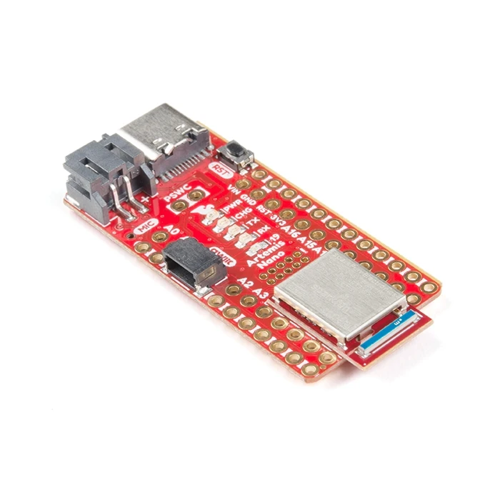
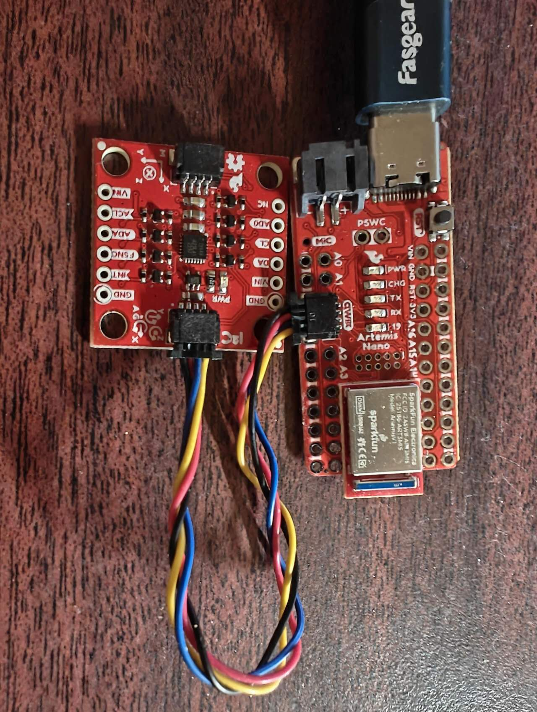
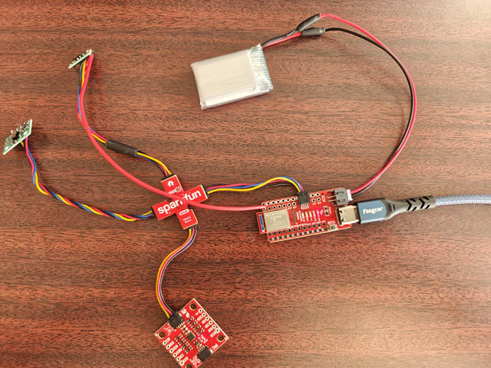
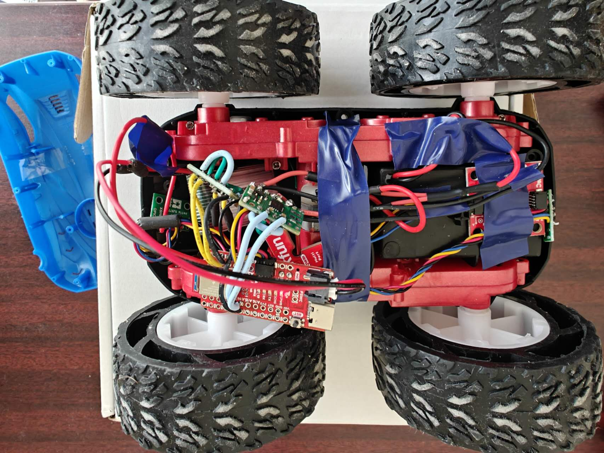
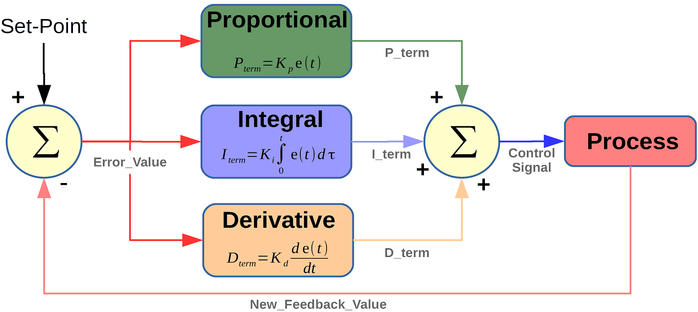
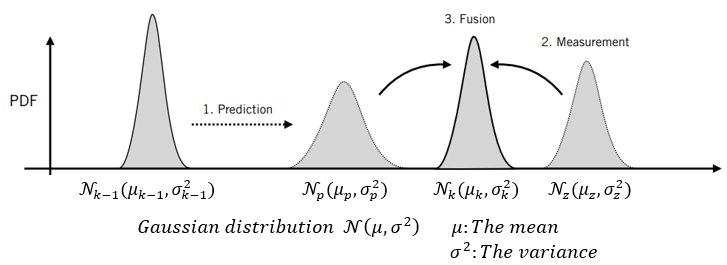
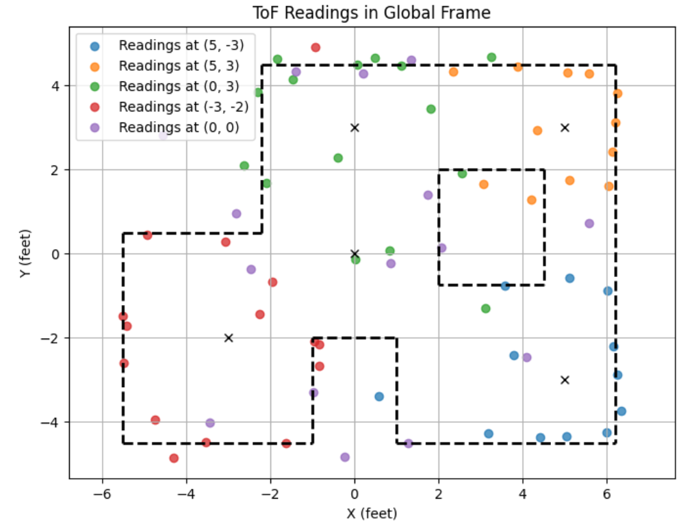
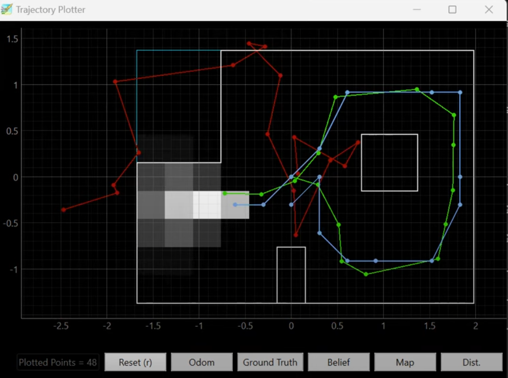

Lab 1: The Artemis Board and Bluetooth is the first step in my Fast Robots curriculum. It introduces essential tools and technologies for developing autonomous robotic systems. The lab is divided into two main sections: Lab1.A: Setup and Initialization and Lab1.B: Bluetooth Communication. In Lab1.A, I set up the Arduino IDE and connected the SparkFun RedBoard Artemis Nano to my computer. I became comfortable programming the board, using its onboard LED, and interfacing with sensors such as the temperature sensor and microphone sensor. In Lab1.B, I learned to establish Bluetooth Low Energy (BLE) communication between the board and my computer, configure Bluetooth settings, generate unique UUIDs, and use Python scripts in Jupyter notebooks for data exchange.
I installed the latest Arduino IDE 2.3.4 on my Win 11 system. Then, I added the JSON link (https://raw.githubusercontent.com/sparkfun/Arduino_Apollo3/main/package_sparkfun_apollo3_index.json) for the Sparkfun Apollo3 boards manager to the Arduino IDE preferences.
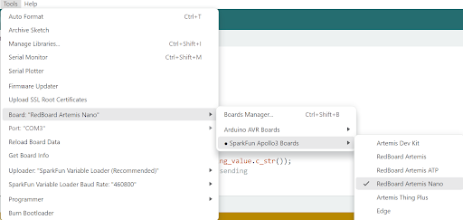
The first step was to connect the SparkFun RedBoard Artemis Nano to my computer using a USB C-to-C cable. I installed the necessary libraries for the board by navigating to the Arduino IDE's Library Manager and searching for "SparkFun Apollo3 Boards." I then installed the library to enable board support. After that I tried with one example code and upload it to the board, no error was found.
BlinkWith the setup complete, I ran the "Blink" example from the Arduino IDE. This sketch made the onboard LED blink at one-second intervals, confirming that the board was functioning properly.
Example4_Serial
I tested serial communication by running the Example4_Serial sketch. I opened the Serial Monitor
to observe messages sent and received over USB, which helped me understand the data exchange process between
the board and my computer. And I notice that only when the serial monitor and the defined baud rate are the same,
the message can be displayed correctly.
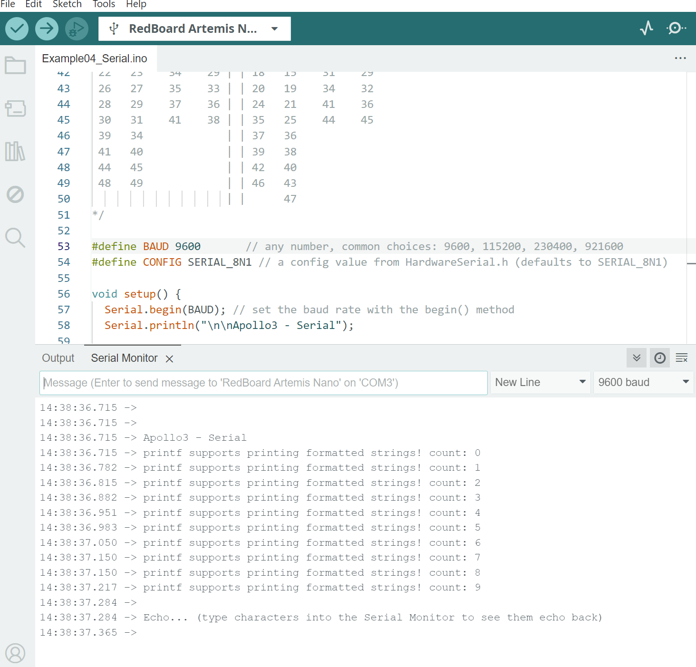
Example2_analogRead
To test the onboard temperature sensor, I executed the Example2_analogRead sketch. Blowing on and
touching the chip changed the temperature readings in the Serial Monitor, demonstrating real-time sensor
interfacing. The following image shows the temperature sensor on the Artemis board when I was touching it.
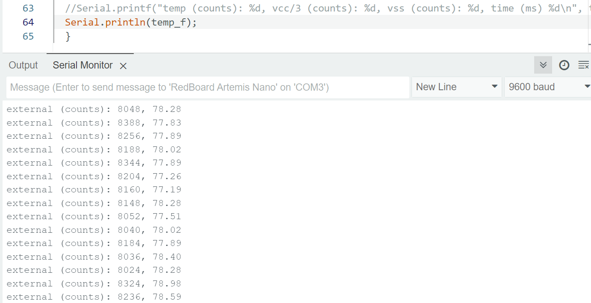
Example1_MicrophoneOutput
I tested the Pulse Density Microphone by running the Example1_MicrophoneOutput sketch.
After playing a 440 Hz YouTube video on my laptop, the board captured the audio frequencies and displayed
the corresponding data in the Serial Monitor. And I notice that the Microphone is sensitive to the
surrounding sound, and the data can be displayed in the serial monitor.
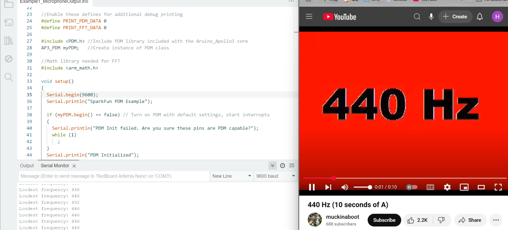
Based on Wikipedia, the frequency of the musical C note is 261.63 Hz. And based on the Example1_MicrophoneOutput,
I defined this frequency along with a 10 Hz tolerance as global variables. The following code checks if the detected
frequency is within the tolerance range and turns the onboard LED on or off accordingly.
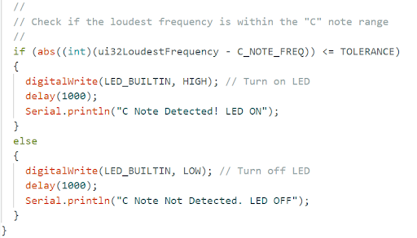
And the following image shows the LED is on when the musical C note is played.
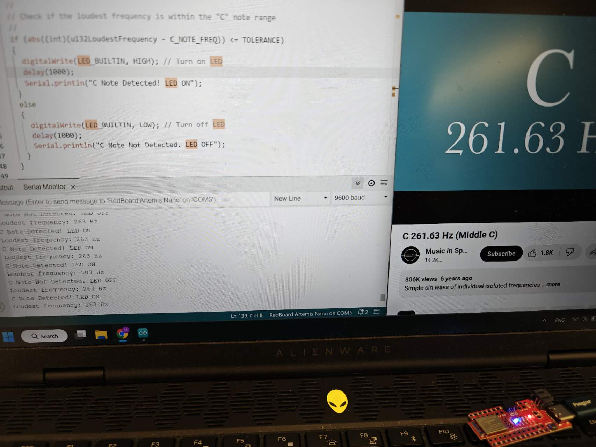
Lab1.A guided me through the essential setup and initialization of the Artemis board. By connecting the hardware, installing necessary software, and running various example sketches, I gained hands-on experience in programming the board, managing serial communication, and interfacing with onboard sensors. These foundational skills are crucial for advancing to more complex tasks.
I began by ensuring my computer was ready for Bluetooth Low Energy (BLE) communication with the Artemis board.
First, I verified that Python 3.12 was installed and created a virtual environment using "python -m venv" called FastRobots_ble for the lab.
Next, I installed all necessary Python libraries (e.g., numpy, pyyaml, jupyterlab) after activating the virtual environment.
Then, I downloaded the codebase (ble_arduino and ble_python) into my project folder, installed ArduinoBLE, and uploaded
ble_arduino.ino to the board. Finally, I updated connections.yaml with the correct MAC address
and generated new UUIDs in both the Arduino sketch and the YAML file. The configurations are shown below.
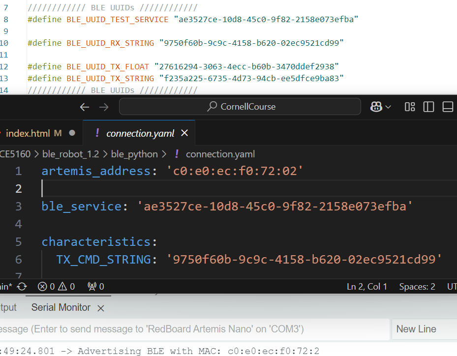
The Artemis board handles the ECHO command by extracting a string from the incoming BLE message.
It then constructs a new string, adding the prefix "Robot says -> " and the postfix " :)" before transmitting it back.
Observing Serial.println(tx_estring_value.c_str()) verifies the command’s execution.
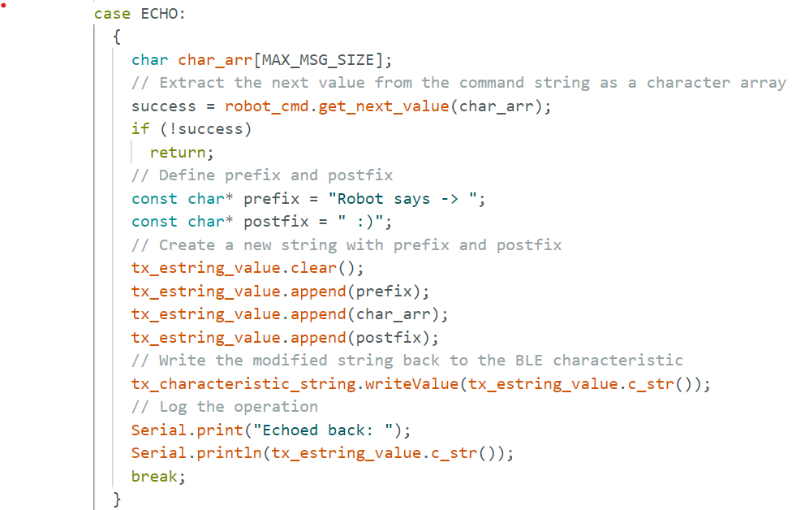
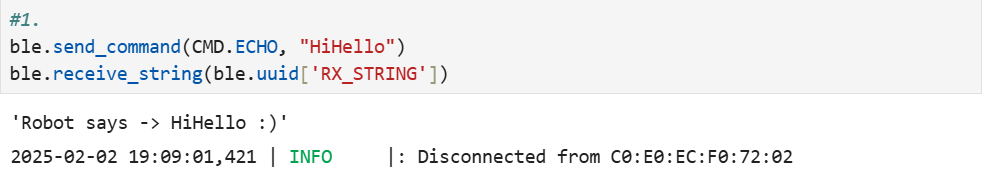
The SEND_THREE_FLOATS command parses three float values sent from Python in a single message.
After successfully extracting the values, it responds with a formatted string "Received: x, y, z".
On the Python side, sending "1|2|3" yields "Received: 1.000, 2.000, 3.000", demonstrating
multi-field data handling.
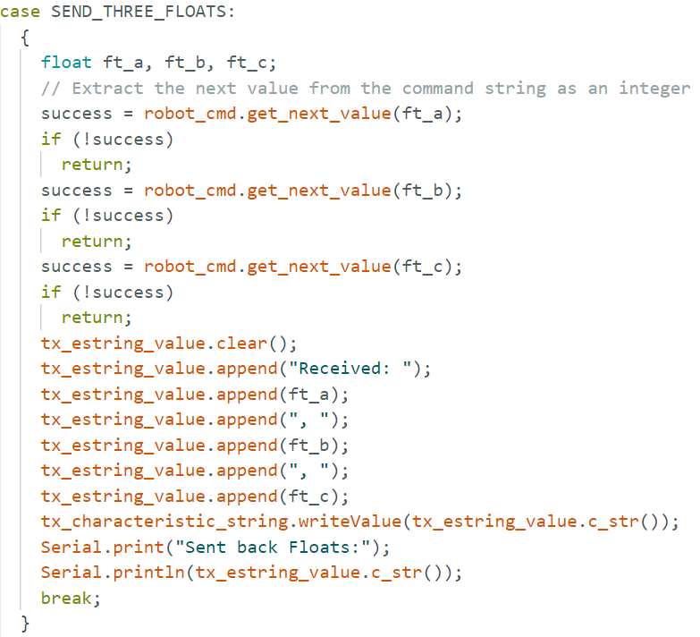

For GET_TIME_MILLIS, the Arduino code appends "T:" plus millis() to the BLE characteristic.
Python sends an empty command and reads back the timestamp (e.g., "T:123456").
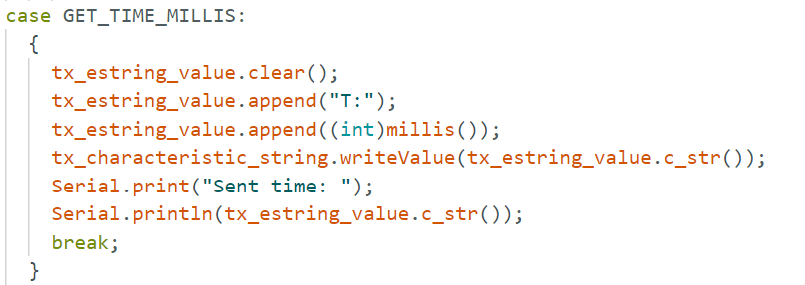
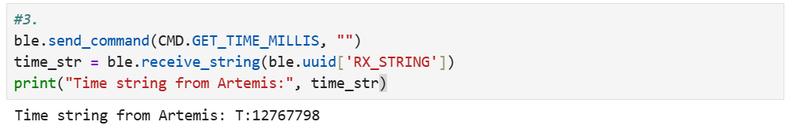
A notification handler is a function that is called whenever a BLE characteristic is updated. In this case, the handler is triggered whenever the GET_TIME_MILLIS characteristic is updated. The handler reads the new value and prints it to the Serial Monitor.
Subscribing to notifications, (ble.start_notify) automatically invokes a handler whenever the characteristic updates.
This real-time, event-based approach is more efficient than polling, enabling continuous monitoring of incoming data.
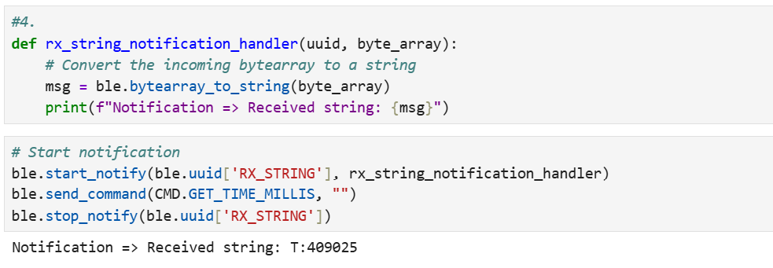
The GET_TIME_STREAM command continuously sends timestamp data ("T:millis") from the Artemis over five seconds,
pausing briefly to avoid overwhelming BLE. On the Python side, a notification handler records each packet with its arrival time.
By counting messages and measuring elapsed time, I observed about 33–34 messages/s. While it provides near-real-time insight,
careful pacing is required to prevent packet loss or buffer overruns.
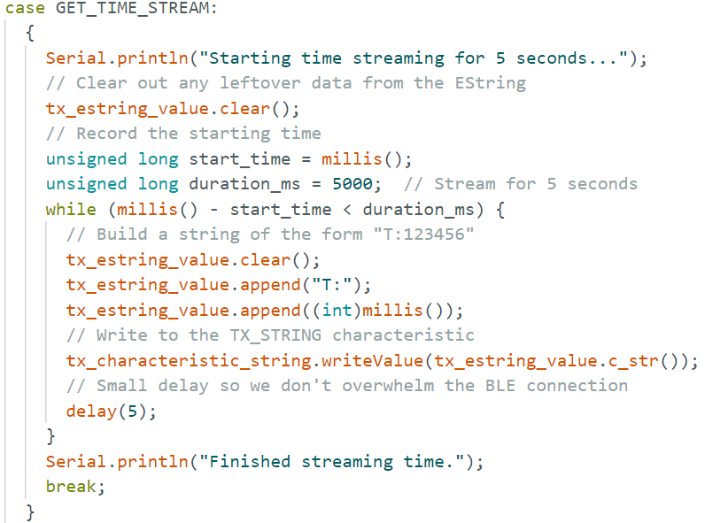
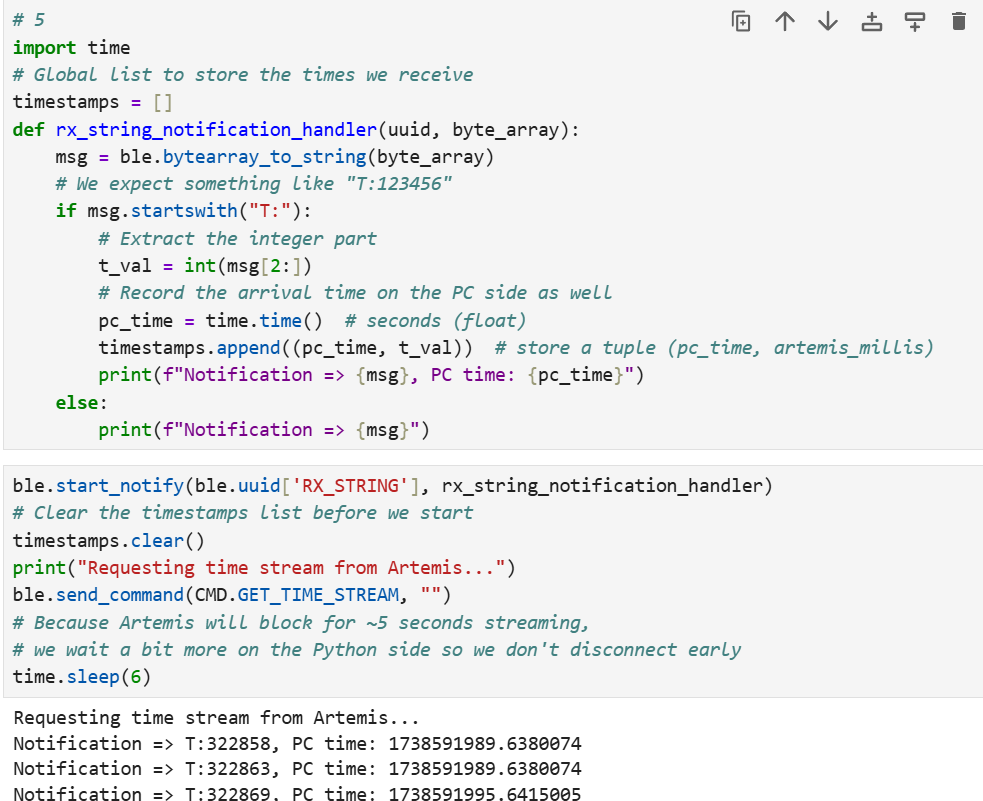
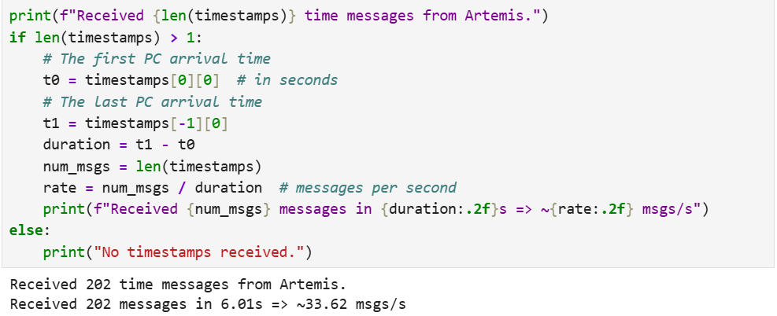
First I predefined a global array with size 100 for time data. Then, similary to 5. SEND_TIME_DATA , but instead of immediately sending timestamps, the Artemis uses STORE_TIME_DATA to log data in a global array for five seconds.
After the collection period, SEND_TIME_DATA transmits the entire dataset.
This reduces per-packet overhead but delays feedback until all data is collected. On the Python side, I verified receipt of the entire dataset,
confirming robust bulk transmission.
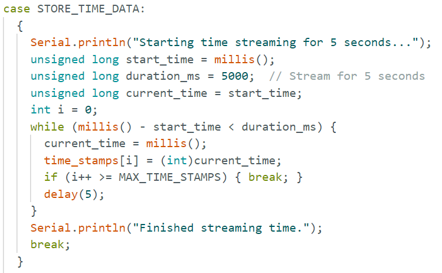
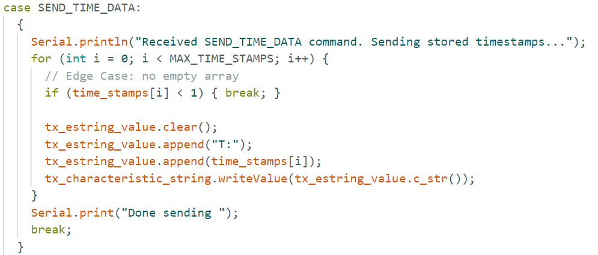
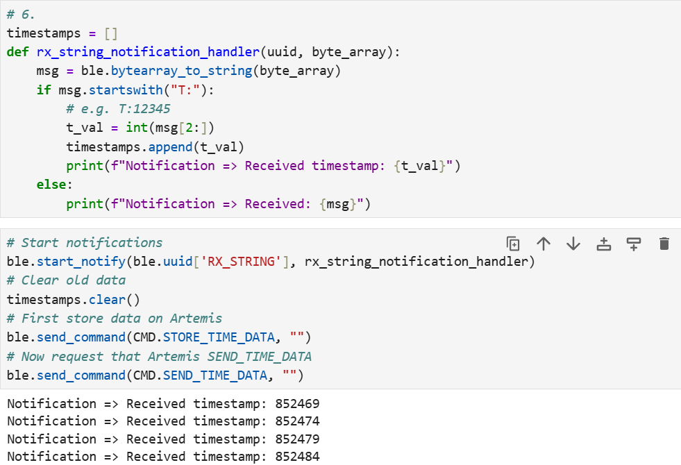
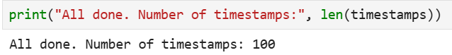
The code adds a second array for temperature readings alongside timestamps, capturing both data types together for five seconds. And similarly, I predefined two global arrays for time and temperature data with both size 100.
Then using STORE_TEMP_DATA to log data in both arrays for five seconds. If overfill happens, the code will stop storing data and break the loop.
After that, invoking GET_TEMP_READINGS will send each time–temperature pair in sequence. Python’s notification handler splits each message
and populates two lists for further analysis. This approach is ideal for sensor fusion, although it increases RAM usage
by storing dual arrays.
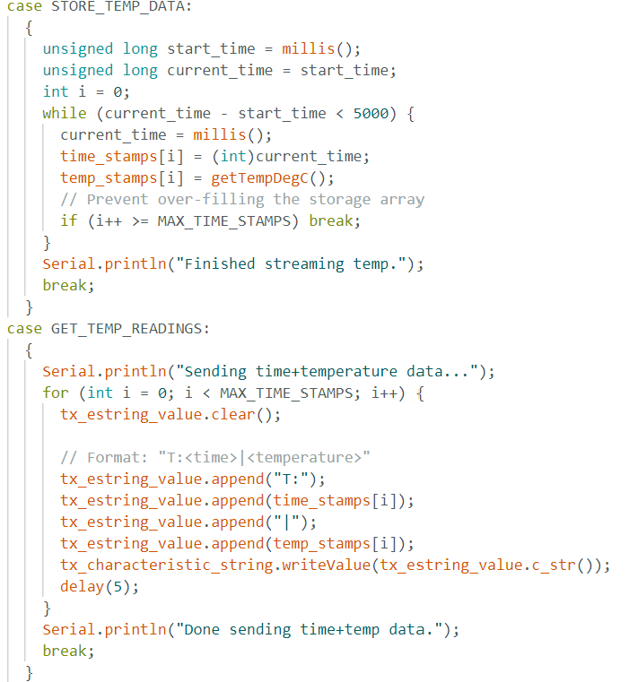
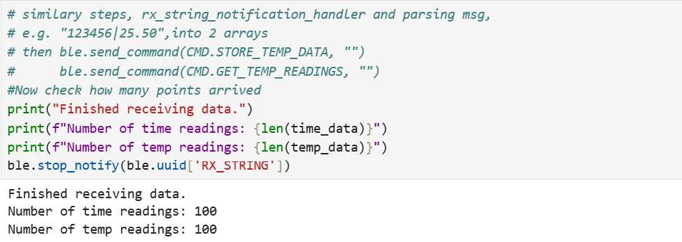
In a Streaming approach, the Artemis board sends each reading (like timestamps or sensor values) as soon as it is generated, providing immediate insight into rapidly changing data. This real-time feedback is especially useful for debugging or interactive monitoring. However, it faces BLE overhead on every transmission, which can limit throughput if the data rate is high. When pushing many packets in quick succession, packet loss may occur or latency may spike, so streaming works best for moderate data rates where instant visibility outweighs potential bandwidth constraints.
By contrast, buffered (bulk) transmission captures data locally on the board for a set period and only sends it in one burst afterward. This reduces BLE overhead per sample, often allowing for much faster internal sampling. However, feedback is delayed until the capture concludes, making it less ideal for immediate monitoring.
Thanks to the Artemis board’s 384 kB of RAM, which is 393216 bytes (384*1024), it can store tens of thousands of messages (e.g. 8-bit chars, 16-bit chars, 32 bit floats, 64 bits doubles). Consequently, buffering suits scenarios needing higher sampling rates without real-time requirements, while streaming is better for quick diagnostics and interactive tasks.
By comparing 5-byte and 120-byte packets ("XXXXXXXX...") from the Artemis, I measured overhead differences between short and long replies. Short replies have faster round-trip times but yield lower data rates (~28 bytes/s), whereas larger packets slightly increase RTT but substantially improve throughput (~667 bytes/s).
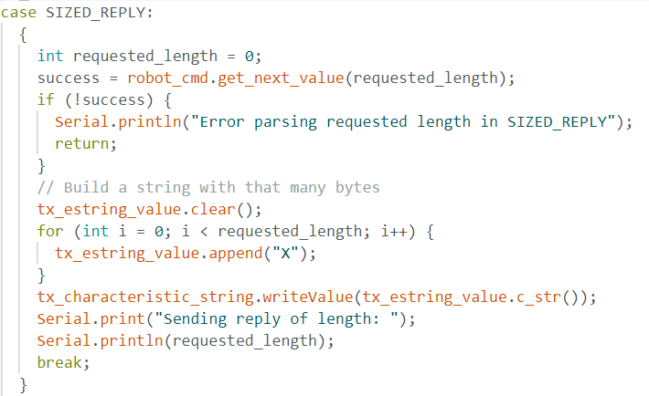
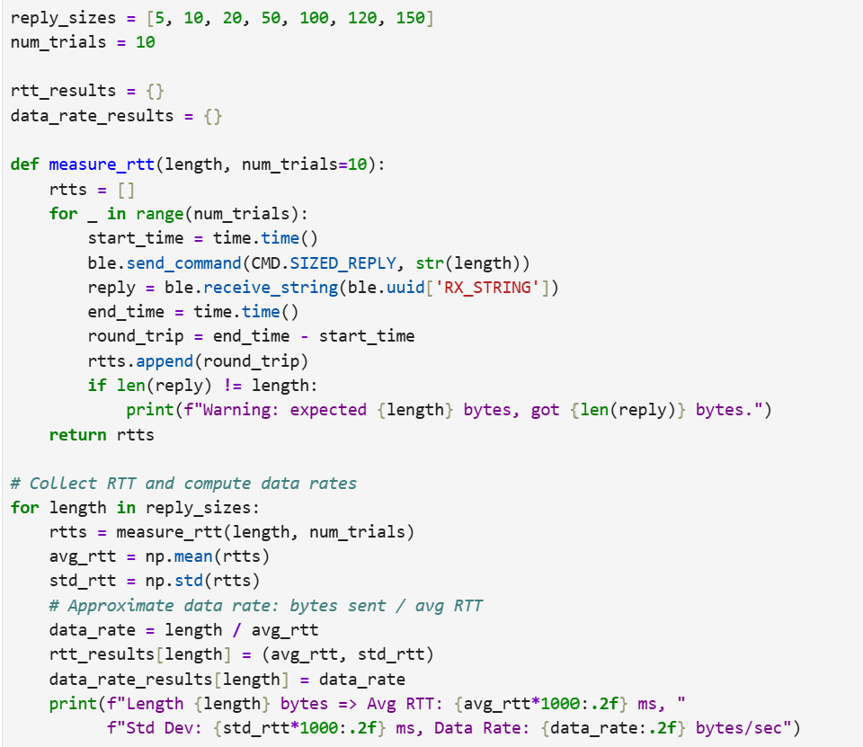
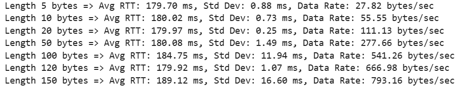
I also tested with other packet sizes, and the following two image shows the result of RTT and effective data rate with different packet sizes. The RTT is calculated by the time difference between the sent time and received time. The effective data rate is calculated by the total data size divided by the total time. From the graphs, the RTT increases gradually with message length, suggesting that BLE handles larger packets efficiently up to a certain limit. And the effective data rate scales nearly linearly with packet size, indicating that larger packets are more efficient for bulk data transfer. However, excessively large packets sent too frequently may saturate the BLE stack, leading to dropped packets or increased delay.
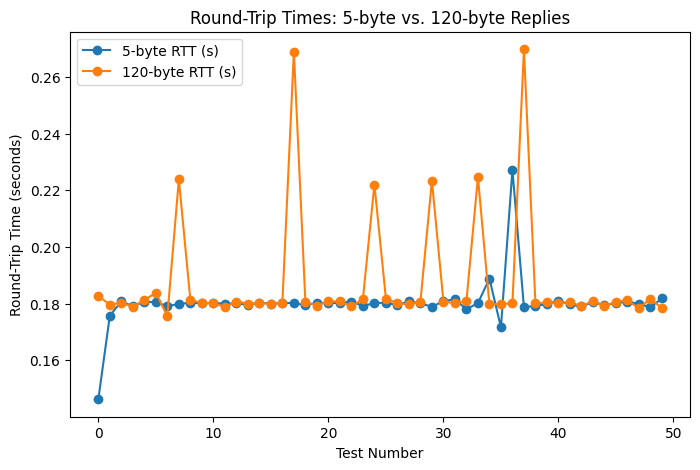
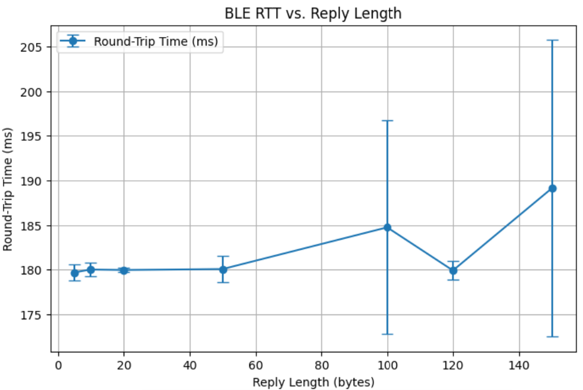
To test reliability, I sent 200 messages in quick succession via HIGH_RATE_TEST and successfully received all of them
by waiting sufficiently on the Python side. Increasing the message count to 500, however, led to packet loss
due to link saturation. This indicates the importance of pacing transmissions or introducing small delays
to avoid overwhelming the BLE stack. Hence, high-rate data transfers must be carefully tuned for speed versus reliability.
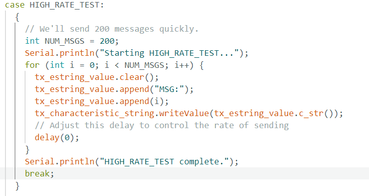
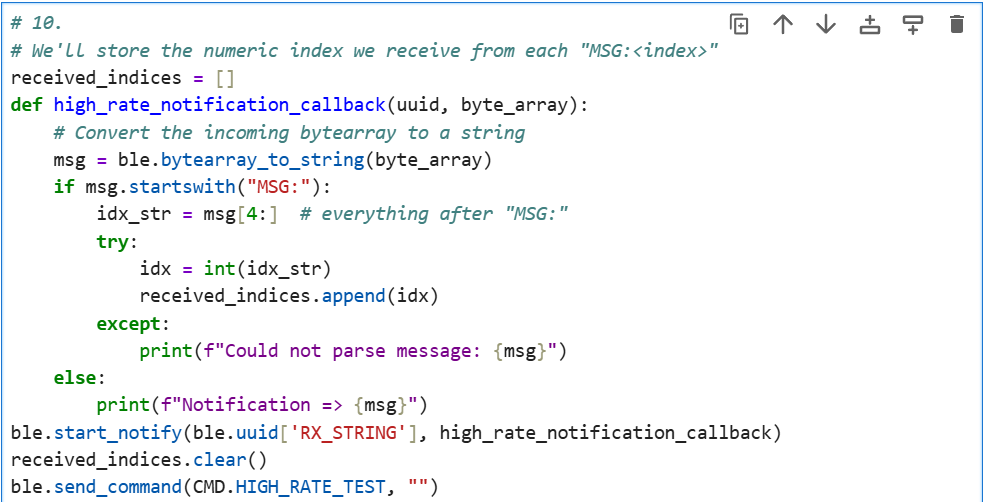
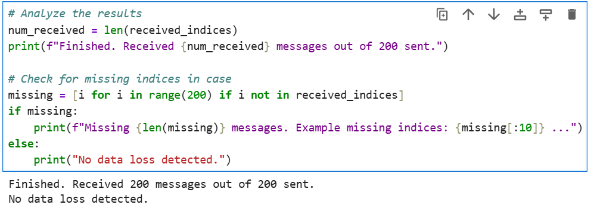
Across Lab 1, I established the foundation of working with the SparkFun RedBoard Artemis Nano, from basic setup and sensor interaction (Lab1.A) to BLE configuration and data handling (Lab1.B). I learned that always match the baud rate of the board and the computer is important for serial communication. I explored both real-time streaming and buffered transmission approaches, learning how to optimize for throughput and reliability under varying conditions. By examining overhead, packet sizes, and transmission rates, I gained insight into effective wireless communication strategies. These experiences will be invaluable as I progress toward more advanced robot control and sensor fusion in upcoming labs.
This lab focuses on integrating the ICM-20948 IMU with the Artemis board and analyzing sensor data to better understand pitch, roll, and yaw. I also experimented with the RC car to observe its movements under different conditions. By examining both accelerometer and gyroscope outputs, the goal is to filter out noise and produce more stable, accurate readings.
To begin, I installed the “SparkFun 9DOF IMU Breakout_ICM 20948_Arduino Library” from the Arduino Library Manager. Next, I connected the IMU to the Artemis board using the QWIIC connectors, as shown in Figure 1.1. Also, the X,Y,Z axes of the IMU can be seen from the board. Once the connection was established, I opened the Example1_Basics sketch from the library to verify that the board could read basic sensor data, with real-time acceleration and gyroscope values displayed in the Serial Monitor. Within the example code, a parameter called AD0_VAL appears, which represents the IMU’s I2C address bit and tells the microcontroller how to recognize the sensor; in this case, AD0_VAL is set to 1 because the ICM-20948 datasheet [1] indicates that the default on the SparkFun breakout board is 1, changing to 0 only when the ADR jumper is closed.
When experimenting with the sensor, I observed that the accelerometer and gyroscope respond differently. Even though the serial plot is hard to see, the data is clear when printed in the Serial Monitor. For example, when rotating the IMU on a plane perpendicular to the Z-axis, the accelerometer readings along the X and Y axes exhibit noticeable fluctuations while the gyroscope readings remain relatively stable. During rapid rotations, the accelerometer values show larger fluctuations due to the decomposition of gravitational acceleration within the sensor's coordinate system, and the gyroscope readings also vary as they measure angular velocity. Additionally, I added a simple visual indicator by programming the LED to blink three times on startup, confirming that the board is running once the IMU sensors have been initialized.
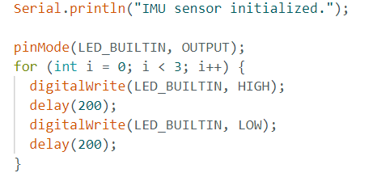
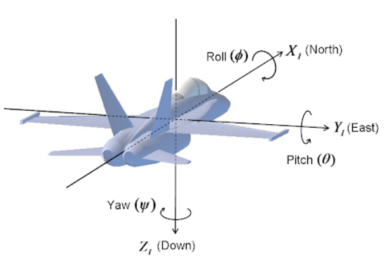
In Arduino, I retrieve the accelerometer data by callingmyICM.getAGMT() and then compute the pitch and roll using the equations (inside a new case called GET_PITCH_ROLL, as shown in the figure in 2.3):
pitchDeg = atan2(ax, az) * 180.0f / M_PI rollDeg = atan2(ay, az) * 180.0f / M_PI
I then moved the IMU board and observed the sensor’s output at {-90°, 0°, 90°} pitch and roll orientations, as demonstrated in the lab video and following table. The resulting measurements indicate that the sensor provides accurate readings within expected limits.
| Rotation\Degrees | -90 | 0 | 90 |
|---|---|---|---|
| Pitch | -88.2 | -0.1 | 88.3 |
| Roll | -87.6 | 0.1 | 87.4 |
In Arduino, I defined a new case function called GET_PITCH_ROLL, which collects, calculates, and sends the data to the Jupyter Side.
After recording a short set of data, I implemented a Fast Fourier Transform (FFT) on the collected accelerometer readings in Python.
By calculating the sampling frequency from the time differences between consecutive data points, I computed the FFT to determine
the magnitude of each frequency component. This analysis reveals dominant noise frequencies, aiding in selecting a suitable cutoff
frequency for filtering. And here the sample frequency is only 16.72 Hz, and the reason is that I am using time.sleep() after ble.send_command(CMD.GET_PITCH_ROLL, "")in the Jupyter Notebook side, which will pause the process and cause the delay.
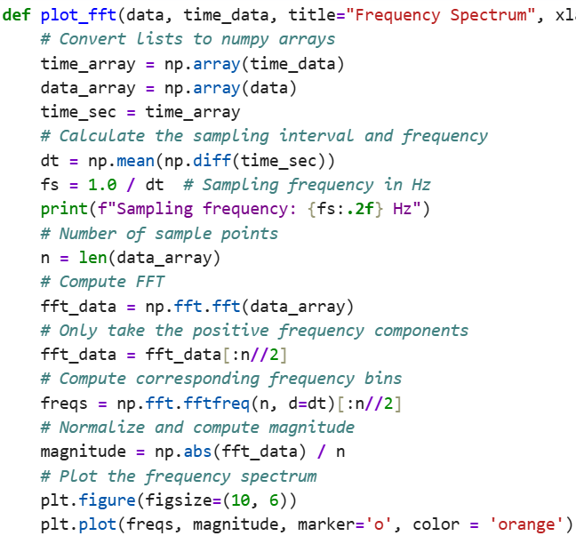
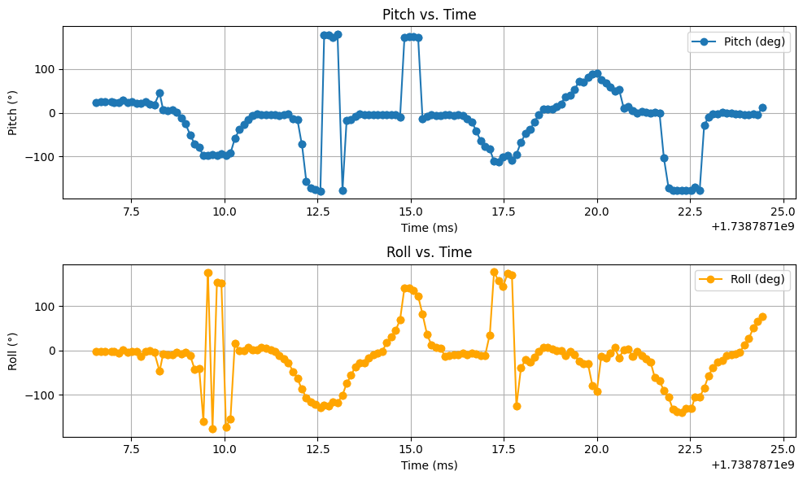
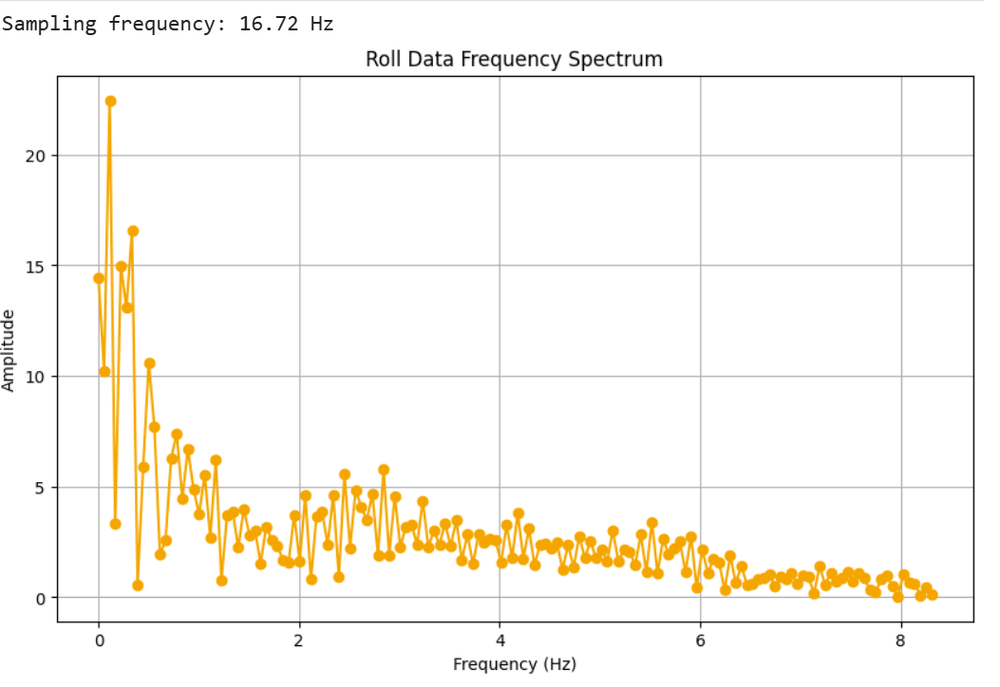
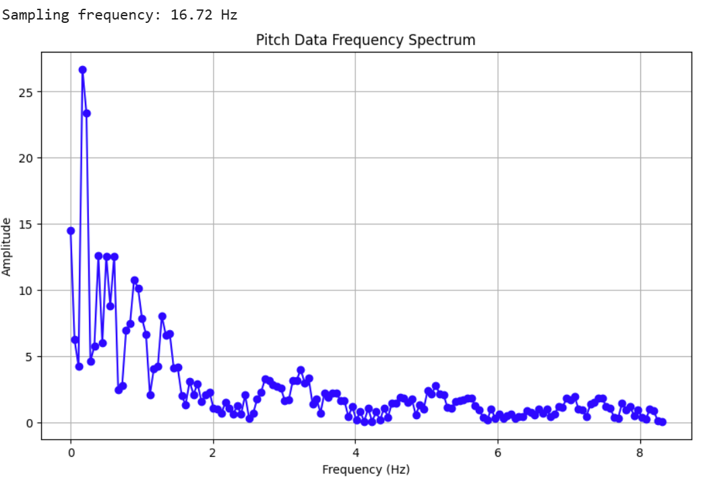
Based on the FFT results, I selected a cutoff frequency of 2 Hz for a simple single-pole IIR low-pass filter. The filter coefficient is calculated using the chosen cutoff frequency and the sampling interval. Applying this filter smoothed out the signal and visibly reduced high-frequency noise, though the overall improvement was not that significant. This minor improvement is likely because the ICM-20948 already applies a built-in low-pass filter, limiting the benefit of further external filtering [1].
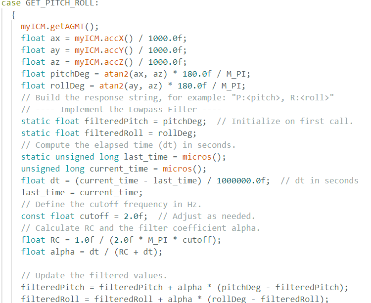
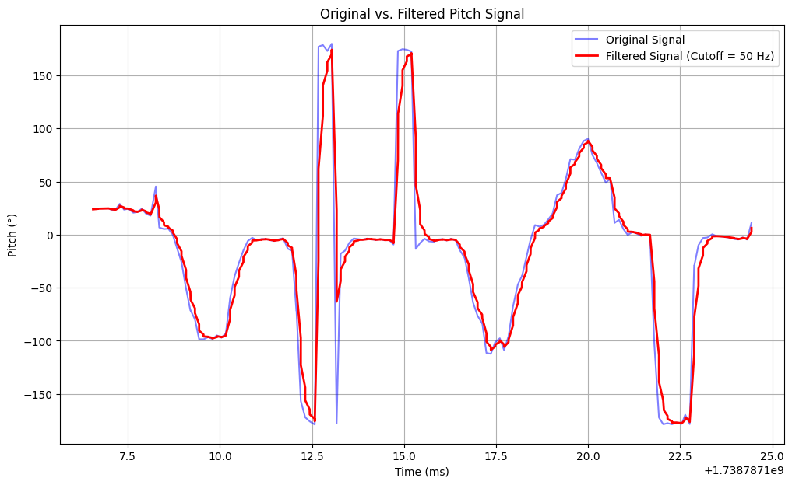
In the Arduino code, I implemented the GET_FROM_GYROSCOPE case to compute the pitch, roll, and yaw angles by integrating
the gyroscope’s angular rates over time. The integration uses micros() to determine dt between updates (Time Difference / 1E6),
continuously updating these gyro-based angles. I also compute pitch and roll from the accelerometer via atan2
for comparison. As shown in the following images, although the gyroscope data is stable in detecting quick orientation changes, it tends to drift over time,
making it less accurate than the accelerometer over extended periods because small cumulative integration errors result in significant drift.
By increasing the sampling frequency and reducing the time between successive readings, the system minimizes these errors, thereby reducing drift and ensuring that the gyroscope’s measurements more accurately reflect the stable long-term readings of the accelerometer.
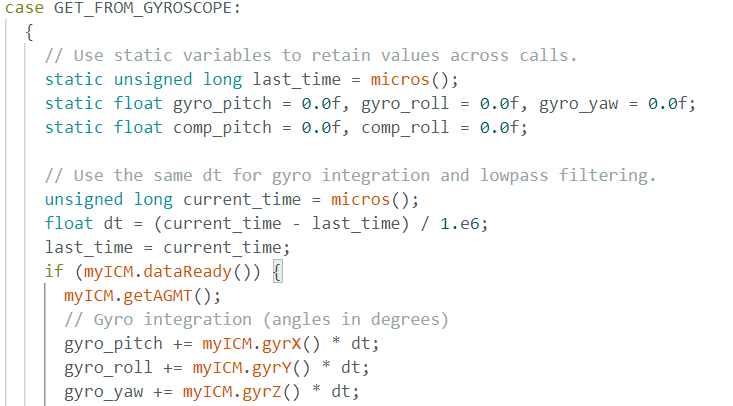
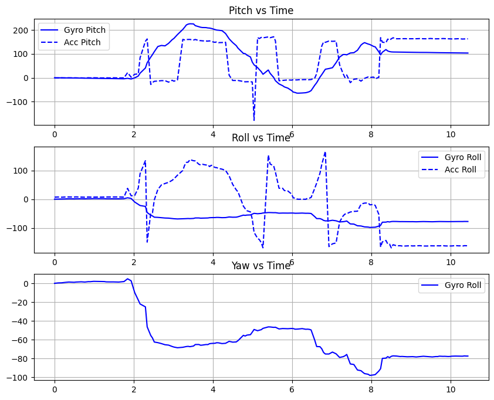
To achieve a more accurate and stable estimation of pitch and roll, I integrated a complementary filter that blends
gyroscope and accelerometer data. The accelerometer angles, first smoothed by a low-pass filter, are combined with the
gyroscope’s integrated angles using a weighting factor (alpha_g = 0.8). This approach leverages the gyro’s
short-term responsiveness while correcting drift with the accelerometer’s long-term stability. Tests across various
orientation changes and movements confirm that the complementary filter effectively reduces drift and remains resilient
to rapid vibrations.
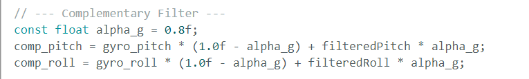
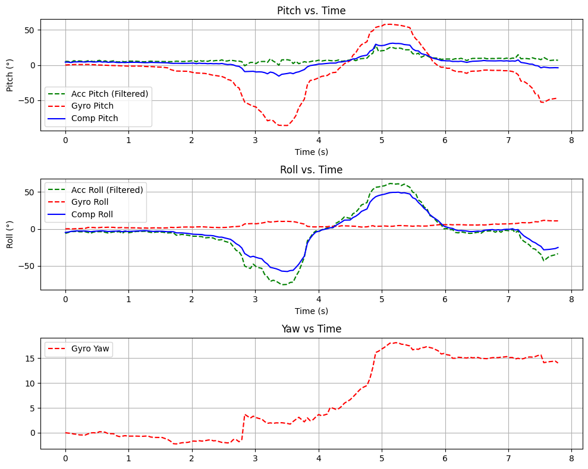
To maximize the sampling rate, I removed any delays and unnecessary Serial.print statements
from the main loop. Instead of waiting for new data in a blocking manner, the loop checks
myICM.dataReady() each iteration and proceeds immediately if it is false.
This method allows the main loop to run at higher speeds than the IMU’s own update rate.
After testing, I collected 1723 samples in 5 seconds (around 340 Hz).
Additionally, I introduced a failed_test counter that increments whenever myICM.dataReady() is false;
in practice, failed_test remained at 0, indicating the IMU output rate was fast enough to supply data each loop cycle.
For data collection, I use a recordingActive flag to control when the code should store sensor readings.
When the STORE_IMU_DATA command is received, recordingActive is set to true.
Each time myICM.dataReady() returns true, the IMU data and timestamps (in milliseconds) are stored
in the allocated arrays (axArray, ayArray, azArray, gxArray, gyArray, gzArray).
Once the 5-second duration expires or the arrays fill up, recordingActive is set to false, preventing further data logging.
I chose separate float arrays for accelerometer (X, Y, Z) and gyroscope (X, Y, Z) readings. This method keeps the code more organized
and simplifies post-processing and plotting. Using float strikes a balance between precision and memory usage—more than enough
for typical sensor data without the overhead of double. With MAX_SAMPLES set to 2000, the Artemis has sufficient memory
to record several thousand IMU samples without exceeding its limits, guaranteeing at least five seconds of data capture at typical sampling rates.
In fact, after uploading, the Artemis reports around 290kB of RAM available, which is more than enough for the current application.
To record IMU data for five seconds, the code sets recordingActive to true upon receiving the
STORE_IMU_DATA command. Samples are stored in arrays until five seconds elapse or the array hits MAX_SAMPLES.
Afterward, the SEND_IMU_DATA command triggers a loop that sends the entire dataset via Bluetooth to a Python
notification handler, which parses each line and appends values to time_data, ax_data, ay_data, az_data,
gx_data, gy_data, and gz_data. Tests confirmed that a full 5-second dataset (typically well over 1000 samples)
transfers successfully without array overruns, verifying reliable data capture and communication.
I tested the RC car for a few minutes, it is not easy to record the car while using the controller, so the following video only shows the basic movements. The RC car demonstrates impressive speed and agility. It is capable of rotating horizontally through a full 360° and can even flip over while continuing to move. However, it is important to note that the car decelerates very slowly when controlled by the remote, which suggests that setting a maximum speed or incorporating additional sensors may be necessary in the future to prevent potential crashes. Furthermore, while holding down the turn button enables rapid 360° rotation, a quick tap on the turn button only results in a turn of approximately 40°, indicating a need for further tuning of the steering control.
Lab 2 highlighted the process of configuring and using the ICM-20948 IMU with the Artemis board, exploring both accelerometer and gyroscope data in detail. The successful implementation of a complementary filter demonstrates how blending sensor readings can overcome their individual weaknesses—noise in the accelerometer and drift in the gyroscope. Additionally, efficient data capture strategies and the ability to send large datasets over Bluetooth ensure a robust setup for further robotic applications.
[1] ICM-20948 Datasheet. SparkFun Electronics. Retrieved from sparkfun.com
[2] Fast Fourier Transform (FFT) Tutorial. Retrieved from FFT in Python
This lab integrates two VL53L1X Time-of-Flight (ToF) sensors with the Artemis Nano for real-time distance sensing. By adding these sensors, the robot can detect obstacles in front and behind, complementing existing IMU data to improve navigation and collision avoidance. The sections below detail the prelab setup, sensor configuration, wiring considerations, and demonstration of data logging over Bluetooth.
According to the VL53L1X datasheet Page 4 , each sensor has a default I²C address of 0x52 (in 8-bit format). However, scanners using 7-bit addressing typically report 0x29. This discrepancy arises because the last bit indicates read/write status, effectively shifting the displayed address.
Since both sensors share the same default address, a strategy is required to avoid conflicts. One sensor’s XSHUT pin is tied to a GPIO (e.g., GPIO 8) on the Artemis, allowing it to be powered down briefly so the other can be reinitialized with a new address. Both sensors then coexist on the same I²C bus without interference.
As for now, my setting will be: one ToF sensor faces forward, while the other faces backward, which enables detection along the robot’s primary movement directions. Although side obstacles may be missed unless the robot rotates, this configuration covers most straightforward collision threats. And the car can simply rotates to detect the side obstacles. Angled or off-axis objects can also evade detection, which may require additional turning or additional sensors in future designs.
Both sensors connect to the Qwiic breakout board for SDA/SCL and power. The Artemis is powered by a 650 mAh battery via a JST cable. Longer Qwiic cables allow flexible placement of the sensors on opposite ends of the robot chassis, while shorter cables link the breakout board to the Artemis. Standard wire colors (red for VIN, black for GND, blue for SDA, yellow for SCL) maintain clarity during soldering and assembly.
The original RC car battery wires were trimmed one at a time and soldered to a JST cable, ensuring proper polarity.
After insulating with heat-shrink tubing, the battery was directly connected to the Artemis Nano’s JST power socket,
eliminating the need for a dedicated adapter cable. Lab 1 test case GET_TIME_MILLIS was re-run to confirm stable Bluetooth connectivity
and that the board functioned normally without USB power.
Using the Example1_wire_I2C.ino sketch, the sensor was detected at 0x29, not 0x52. This discrepancy
arises from the 7-bit addressing convention, where the last bit indicates read/write status. When represented without this last bit, as in the scan above, the remaining address is bit shifted to the right (0b1010010 → 0b0101001), an operation equivalent to halving the decimal value.
Since Medium mode is only available through the polulu library, my testing focused on Short and Long modes, as supported by the SparkFun library on Arduino IDE. Based on the datasheet Page 10 and 11, short mode completes a reading in about 33 ms and covers roughly 1.3 m at higher accuracy, while Long mode supports up to 3.6 m but doubles the measurement time (~100 ms) and can be influenced by ambient light. Considering typical indoor use, Short mode was chosen to maximize update frequency.
Since the measure tape is unavailable, I used a 30 cm ruler for basic tests. During the 30–25 cm range, both short and long modes work perfectly with less than 0.5 cm error and high repeatability. However, as the distance approaches 1 cm, the long mode’s error increases to around 1 cm, while the short mode exhibits even larger inaccuracies when measuring distances smaller than 1 cm. Timing measurements confirmed ~50 ms per reading in Short mode, ~100 ms in Long mode. These values confirmed that short mode is sufficient for indoor obstacle avoidance where sub-second response times are required. Also, for the short mode, I tried measure three times and the standard deviation is around 0.7 cm.
I configured two sensors using the SparkFun_VL53L1X library and Wire for I2C communication, with sensor1 assigned a custom I2C address and sensor2 managed via dedicated shutdown and interrupt pins.
After confirming that both sensors are properly initialized and online, I configured them to operate in short distance mode and began continuous ranging.
The system then monitors each sensor using checkForDataReady() to ensure synchronized, real-time distance measurements without blocking delays.
The IMU was similarly queried for data when ready, shown in Lab2's content, ensuring all sensors are polled without halting the main loop. This approach
enables streamlined, parallel sensor acquisition for improved situational awareness.
The code’s speed improvements are achieved by employing a non-blocking design that avoids traditional while() loops waiting for sensor data.
Instead of halting execution, the code uses the checkForDataReady() function and Continuous Ranging Mode (distanceSensor1.startRanging()) to periodically verify whether a new measurement is available, allowing the main loop to iterate rapidly—around 700 times per second.
Sensor updates themselves come at ~10 Hz (100 ms intervals in continuous mode). As a result, the limiting factor is the
sensors’ internal refresh speed rather than the board’s CPU frequency or I²C bus overhead.
Two new command types (STORE_DUAL_TOF_IMU_DATA and SEND_DUAL_TOF_IMU_DATA) allow recording five seconds (or longer)
of ToF and IMU data for later retrieval. The IMU data was converted to the complementary filtered roll and pitch, as the lab2's method. During 5000 ms, Jupyter side received 956 notifications in total, so the sample rate is 191 Hz.
I have tested both sending directly the ax, ay, az, gx, gy, gz and the roll and pitch; both works. The notification has the following format:

This data is then sent in bursts to a Python script over Bluetooth, which parses and plots distance vs. time, alongside IMU accelerations and gyroscope rates. This non-blocking, event-driven approach ensures real-time logging without missing measurements. To test the Time vs Distance, I moved the sensors towards the wall, as the first image shows; and to test the Angle vs Time, I rotated the IMU sensors around the Y-axis first, then rotated around X-axis, as the second image shows.
Infrared distance sensing can be achieved through several approaches, including simple reflectance-based sensors, structured-light systems, Laser Range Finder (LIDAR)and Time-of-Flight (ToF) Sensors. Traditional reflectance sensors (e.g., Sharp GP2Y series) emit an IR beam and measure the angle or intensity of the reflected light to gauge distance, which can be relatively low-cost but prone to inaccuracies with certain colors or textures. Structured-light sensors, such as early Microsoft Kinect devices, project a defined IR pattern onto a scene and use distortion in the pattern to map depth, thereby providing a rich 3D view but at higher complexity and power demands. LIDAR systems, like the Velodyne VLP-16, emit a laser beam and measure the time taken for the beam to return, offering high precision and resolution but at a premium price and power consumption. Time-of-flight modules like the VL53L1X measure the round-trip time of an IR pulse, resulting in generally robust distance estimates less affected by color or ambient lighting changes. Compared to other IR methods, ToF sensors often offer faster sampling rates and consistent performance across a wider range of surface materials. However, they can be more expensive and sensitive to setup constraints (like cover glass and stray reflections) than simple reflectance sensors.
To investigate color sensitivity, measurements were taken at fixed distances against both a black box and a white box in Short mode, as summarized in the table below. Dark surfaces tend to absorb or diffuse more IR light, causing marginally lower readings or greater variation in measured distance. The VL53L1X’s built-in calibration helps compensate for differences in reflectivity, so discrepancies remained within a few millimeters to about one centimeter in the tests. At shorter distances (under 10 cm), the sensor exhibited slightly more variability on dark surfaces, likely due to reduced returned signal strength.
To test texture sensitivity, measurements were taken against a white box and a white glass bottle. The box’s smooth, matte surface provided consistent readings, while the bottle’s textured, reflective surface caused more variation in distance measurements. But the sensor’s averaging and filtering capabilities helped mitigate these effects, resulting in relatively stable readings across both surfaces.
In summary, the VL53L1X’s robust calibration and filtering mechanisms ensure reliable distance measurements across a range of colors and textures, with minor variations in readings due to surface properties.
| Collected Data vs Expected Data (cm) | 1 | 2 | 5 | 10 | 15 | 20 | 25 | 30 |
|---|---|---|---|---|---|---|---|---|
| Black Box | 1.8 | 3.8 | 5.3 | 9.3 | 14.1 | 24.5 | 27.5 | 29.6 |
| White Box | 1.2 | 2.5 | 4.6 | 10.2 | 15.1 | 20.4 | 25.7 | 30.7 |
| White Glass Bottle | 0.9 | 1.8 | 3.9 | 9.8 | 13.8 | 19.1 | 24.2 | 29.3 |
In Lab 3, the successful integration of dual ToF sensors expands the robot’s ability to detect and avoid obstacles, while the existing IMU continues providing orientation data. By employing non-blocking code and time-stamped logging, the robot can capture high-fidelity data without sacrificing responsiveness. These enhancements lay the foundation for more complex navigation tasks in upcoming labs.
In this lab, I explore motor control using the SparkFun RedBoard Artemis Nano and dual motor drivers. I focus on transitioning from manual to open loop control, which involves programming the robot to execute pre-defined moves. The tasks include connecting motor drivers, testing PWM signals, calibrating motor speeds, and implementing various movements such as straight driving, pivot turns, and reversing. This approach helps me understand how to overcome issues like static friction and motor discrepancies while ensuring reliable operation.
I started by reviewing the Artemis board schematic to identify pins that support PWM, which are labeled with a tilde (~). In my previous lab, I had connected the XSHUT pin of one ToF sensor to pin 8, so I wanted to keep that setup intact. For this lab, I chose pins 6 and 7 for the first motor driver, and pins 13 and 14 for the second motor driver, because each pair provides the PWM signals I need to control motor speed. I also made sure that these pins were in convenient physical locations on the board to reduce wiring complexity. The diagram below shows how each motor driver input is wired in parallel and connected to the selected PWM pins on the Artemis.
I decided to power the Artemis from one supply and the motors from a separate 3.7V, 850mAh battery. The main reason is that motors can draw sudden bursts of current, causing voltage dips and electrical noise that might reset or interfere with the microcontroller. By using separate power sources, I can better isolate the sensitive electronics on the Artemis board from these fluctuations. This approach also simplifies debugging, because I can monitor the motor battery voltage and current without worrying about the Artemis supply. In addition, having separate batteries makes it easier for me to troubleshoot if either side of the circuit experiences issues.
I paid close attention to the length and routing of my wires to minimize electromagnetic interference (EMI). Longer wires can pick up or radiate more noise, especially at higher currents, so I kept the motor leads as short as possible. I used flexible, stranded wires instead of solid-core ones because the car can undergo high accelerations that might stress or break rigid wires. Color coding each wire (for instance, red for positive voltage and black for ground) helps me avoid confusion when I need to make quick changes. These precautions should reduce noise-related problems and make it easier to troubleshoot any connection issues that arise.
Before arriving at the lab, I skimmed through all the instructions to understand the scope of the work. This included reviewing the details on parallel-coupling the dual motor driver channels and how to use the oscilloscope for measuring PWM signals. Having an overview of the entire procedure helps me plan the order of tasks, especially when juggling hardware setups and code testing. It also allows me to think about potential pitfalls, like ensuring all grounds are connected or limiting the motor supply current during initial testing. Armed with this knowledge, I feel ready to proceed with assembling the hardware and writing the code for open loop motor control.
I removed the original factory PCB and LEDs from the car to create enough space for my motor drivers.
Then I carefully soldered both the input and output pins on each driver board and connected them to the corresponding pins on the Artemis, following my schematic.
For the first motor driver, I wired the outputs directly to the motor, which made it more difficult to measure the signals with the oscilloscope.
To compensate, I connected short wires to the output pins on the second motor driver so I could easily observe the PWM signals.
For analogWrite(), it accepts a value between 0 and 255, which corresponds to a duty cycle of 0% to 100%.
With the motor driver powered at 3.7V from the power generator, I ran my code (shown above) and verified that the oscilloscope trace gradually increased as expected for a PWM signal.
I connected the motor driver outputs to the Artemis board, while still supplying 3.7V from the voltage generator. Based on the motor control table discussed in class, I used pin 6 to provide PWM signals and pin 7 to remain LOW or HIGH depending on the desired rotation direction. First, I set pin 6 to a PWM value (e.g., 200) and pin 7 to 0 for clockwise rotation. Then, I reversed the signals by setting pin 6 to 0 and pin 7 to PWM for counterclockwise motion. Below is the code snippet I used to verify that the right-side motor could spin in both directions:
I started by powering the Artemis board with a 650mAh battery (connected via JST) and used a separate 850mAh battery to supply the two motor drivers. After soldering all connections, I secured the IMU on the battery compartment surface with blue tape to maintain a level plane and align the X-axis with the car’s center. I then linked both batteries and uploaded the code shown above, which drives both motors forward at a moderate PWM value of 50 for two seconds. The following image shows the car setup before the test, with the Artemis board, motor drivers, and batteries all connected. Also, for the demonstration purpose, the elements are "pulled out" to show the connections clearly, in reality, I am able to put them all inside the car.
When testing, I noticed that a PWM value above 100 caused the wheels to spin too quickly and risk collisions, so I lowered it to 50. However, the car still veered slightly because one side’s motor spun faster. I believe this discrepancy stems from inherent variations in the motors and their mechanical linkages. In addition, any small offset in how the wheels are mounted or in the weight distribution of the chassis can affect the overall rotation speed. The battery voltage and wiring connections might also introduce minute variations in current delivery to each motor.
Notice that this test is influenced by the battery voltage and the ground material, so the results may vary. I used the new battery and ran it on the Lab table. I wrote a sketch that uses a for loop to gradually increase the PWM value until I observed the car starting to move. For forward motion, I found that the slower side motor began moving at around 40 PWM, while the faster side motor started at about 30 PWM. This difference indicates that even when the same PWM signal is applied, inherent motor variations or slight differences in mechanical load can affect the starting threshold. I also noticed that the car required a higher PWM value to overcome static friction when starting from rest compared to keeping it running.
For on-axis turns, I modified the code so that one motor runs forward while the other runs in reverse. During these tests, the slower motor required around 130 PWM and the faster motor only about 100 PWM to achieve a balanced turn. This discrepancy further highlights the need to account for differences in motor performance when designing control strategies. I also observed that as the 850mAh battery voltage drops, the required PWM threshold increases, indicating that battery condition plays a significant role in motor performance.
Below is a short demo video:
Due to the factors mentioned in previous sections, the car does not drive perfectly straight when both motors receive the same PWM value. The blue-taped side motor proved to be faster, requiring a lower minimum PWM of about 30, compared to 40 for the other side. To compensate, I introduced a calibration factor for the faster motor of 0.75 (30/40). When assigning a PWM of 60 to the slower motor, I found that using a factor of 34/40 (~0.85) for the faster side achieved straight-line movement for at least 9 tiles (9 ft or 2.7 m). Here is the code that demonstrates this calibration:
I implemented open loop control by programming a sequence that includes driving straight, performing pivot turns, and reversing. In my code, I defined the motor control pins for the left (blue) and right (other) motors and set specific PWM values for both forward motion and turning maneuvers. The program starts with the robot stopped, then drives forward from 3 to 5 seconds, executes a left pivot turn between 5 and 7 seconds, follows with a right pivot turn from 7 to 9 seconds, and finally reverses for 2 seconds before stopping. Although the robot hit a wall during the demonstration, it performed the correct movements, confirming that the untethered, open loop control logic works as intended. But this highlights that we need to integrate sensor data to avoid collisions and improve navigation in the future.
Based on the Arduino reference, I know that analogWrite generates a PWM frequency of approximately 490 Hz on most pins, but the datasheet of the Artemis board does not directly demonstrate the default PWM frequency. Based on my experiment, as the following oscilloscope's image shows, the time scale is 2 ms/div, and the period is around 5.4 ms(2.7 divisions * 2 ms/div), so the frequency is around 185 Hz (1/5.4ms). This is adequately fast for our motors since it is higher than the data collection frequencies of our sensors—the IMU collects data at about 340 Hz and the ToF sensor at around 15 Hz. The higher PWM frequency helps ensure smooth power delivery to the motors without interfering with sensor readings.
However, I believe there are benefits to manually configuring the timers for an even faster PWM signal. A higher frequency can lead to smoother motor control at low speeds, reduce audible noise, and minimize electromagnetic interference. Adjusting the PWM frequency might also improve the overall efficiency and responsiveness of the motor control system. Although the default 490 Hz is sufficient, fine-tuning the timers could yield more refined control in specific situations.
I wrote this code to experimentally determine both the PWM required to start the robot moving and the lowest PWM it can maintain once in motion. I began at a PWM of 40 for both motors to overcome static friction, then gradually decreased the value in steps of two every second. I noticed that the car completely stopped after about 8 seconds. This suggests that my lowest sustaining PWM lies around 24 (40 - 2*8) under the current conditions (battery level, floor friction, etc.). The video demonstration confirmed these findings, showing a smooth transition from higher PWM to near-stall speed.
In conclusion, I successfully soldered and built my own functional robot car, including the Artemis Nano board, IMU board, 2 ToF sensors, dual motor drivers, and separate power supplies. I tested the motor drivers and PWM signals, calibrated the motor speeds, and implemented various movements like straight driving, pivot turns, and reversing. These experiences will help me design more robust and responsive control systems in future labs and projects.
The primary objective of this lab is to implement a PID (Proportional–Integral–Derivative) controller that directs a small robot to stop at a precise distance—about one foot—from a wall. A time-of-flight (ToF) sensor provides distance feedback, while an Artemis microcontroller manages real-time computation and logs diagnostic data. After the run, the system transmits these logs to a host computer via Bluetooth Low Energy (BLE) for further analysis and tuning.
Additionally, linear extrapolation of ToF data is incorporated to mitigate sensor sampling delays and improve responsiveness. Furthermore, an integrator wind-up protection mechanism is added to enhance robustness in the presence of motor saturation or changing floor surfaces. And finally, the Car and System is successfully tested on both the Lab smooth floor and the carpet floor.
A fully assembled robot comprising an Artemis microcontroller, and ToF sensors is used in this experiment.
A Bluetooth Low Energy link is utilized to transmit commands from a Python (Jupyter) environment to the microcontroller and to send sensor data back after the run. This facilitates rapid adjustment of PID gains and efficient logging of system variables.
The firmware includes three new key commands in the handle_command() function:
SET_PID_GAINS: Parses incoming float values (Kp, Ki, Kd, and setpoint) to update global variables.
START_PID_CONTROL: Initiates the primary PID loop for a user-specified duration (default 5000 ms), during which ToF readings are gathered, PID outputs computed, and motors driven.
GET_PID_DATA: Instructs the system to transmit logged data arrays over BLE upon run completion.
Data are stored in arrays of 1000 samples. With two integer arrays and three float arrays, approximately 16 KB of memory is used—well within the available 384 KB.
A flag is also included to stop the robot if the BLE connection fails.
A corresponding Python script subscribes to the RX_STRING characteristic using a notification handler that parses incoming data strings formatted
as "T:<time>|E:<error>|U:<output>|D:<distance>|M:<motorPWM>".
The parsed fields are appended to Python lists and later visualized using matplotlib.
Commands such as SET_PID_GAINS, START_PID_CONTROL, and GET_PID_DATA
are sent via BLE to adjust controller parameters, initiate the run, and retrieve logged samples. And these commands are used in this format: ble.send_command(CMD.x, …) .
The PID model follows the classical structure:
where e(t) is the difference between the desired setpoint and the measured distance.
The proportional term responds to the current error, increasing Kp can make the robot car more responsive, but it may also introduce oscillations.
The integral term accumulates past errors, which can help eliminate steady-state errors but may cause overshoot or instability if too high.
The derivative term anticipates future errors, which can help dampen oscillations and improve settling time.
Distance measurements come from readDistanceSensor1(), which checks the ToF sensor in a non-blocking manner.
If no new reading is ready, the function returns the most recent valid distance. The principal PID logic resides in runPIDIteration().
This function first calculates the elapsed time since its last call (dt),
then obtains the latest distance reading from readDistanceSensor1().
The error is computed as the difference between the setpoint (pidSetpoint) and the measured distance.
The integral term accumulates the error over time, and the derivative term captures abrupt changes by comparing the current error to the previous one.
These three contributions are multiplied by the user-specified gains Kp, Ki, and Kd respectively,
and then summed to form the controller’s output. A call to mapPIDToMotor(float pidVal) clamps the PID controller’s floating-point output to the integer range −255 to 255, preparing it for use in PWM commands.
The function setMotorSpeed(int motorCmd) receives this clamped integer command and decides which pins to drive, as well as how strongly to drive them.
A calibration step in setMotorSpeed() scales the PWM duty cycle differently for the left (blue) and right (other) motors to compensate for hardware differences,
while a protective clamp (absCmd > 100) prevents excessively high speeds that might cause collisions.
Each cycle also logs the relevant data—timestamp, error, PID output, distance,
and motor command—into arrays that can later be retrieved over Bluetooth for offline analysis.
In this lab, the PID controller is tunded and tested to stop the robot car at a distance of 304 mm and 608 mm from the wall.
When tuning the controller, initial tests were performed with Kp = 1.5 while leaving the integral and derivative gains at zero.
This high proportional gain led to oscillations around the target distance, indicating an overly aggressive response.
Reducing Kp diminished these oscillations but did not yield a satisfactory settling behavior.
Introducing a relatively large derivative gain (Kd = 20) helped the robot decelerate more gracefully as it approached the wall,
providing essential damping to prevent extreme oscillations.
Experiments with a small integral term (Ki = 0.05) revealed that even minimal integral action could cause the robot to overshoot and hit the wall,
likely due to excessive error accumulation during saturation.
Ultimately, the most reliable behavior was observed with Kp = 1.1, Ki = 0, and Kd = 20,
with a setpoint of 304 mm. Under these gains, the proportional component effectively closed the gap,
while the derivative term curtailed overshoot near the wall. Based on the Distance vs Time figure,
the maximum speed of the robot car is calculated to be 0.7 m/s ((750 - 450) mm/(0.5*(76000 - 75000)) ms).
Plots of PID error, distance, and motor PWM over time confirm that this final gain combination produces an approach with minimal oscillation and a stable stop,
suggesting that a PD controller is appropriate in this scenario.
The following video demonstrations illustrate the robot car's behavior with different PID controller settings:
In my current setup, the sensor operates in short mode, which prioritizes faster refresh over extended range.
Based on Section 3, PID Data Notification timestamps Image (Blue line parts) show that one typical interval between consecutive ToF measurements spans from T=234785 ms
to T=234882 ms, corresponding to 97 ms. This gap implies a ToF sensor sampling rate of approximately 1/0.097 s≈10.3 Hz.
Over the entire five-second experiment, 961 messages were recorded.
Dividing 961 messages by five seconds yields roughly 192 messages per second (∼192 Hz).
These messages include the PID loop’s repeated calculations and log entries.
Hence, the control loop executes more rapidly than the sensor updates, ensuring that the robot can still issue timely motor commands and compute errors even when new distance readings are not yet available.
The significant frequency disparity—where the ToF sensor updates at roughly 10 Hz while the main loop cycles at nearly 200 Hz—necessitates an extrapolation strategy. By estimating new distance values based on prior measurements, the controller maintains smooth and responsive motor control even in the intervals between actual sensor updates.
Linear extrapolation is employed to compensate for the slow rate of new ToF measurements. This method uses two consecutive valid distance readings and their timestamps. If a fresh sensor reading is available, the code updates the current and previous values; otherwise, it calculates the slope (the difference in distance divided by the difference in time) and multiplies it by the elapsed time since the last reading. The product is then added to the most recent distance to estimate a new value.
The function getDistanceSensor1Extrapolated() implements this logic.
With extrapolation enabled, the original gain set used without it became inadequate.
After iterative tuning, the final gains were set to K_p = 30, K_i = 0.005, and K_d = 20,
resulting in a responsive controller that reliably converges to the setpoint while incorporating both raw and extrapolated measurements.
Integrator wind-up occurs when the actuator saturates, allowing the integral term to accumulate excessive error.
To prevent this, the implementation clamps the integral term to a maximum of 800.0f using #define MAX_INTEGRAL 800.0f.
Whenever the integral term attempts to exceed ±800, it is forced back within these bounds.
Comparisons of distance plots and videos show that wind-up protection results in a smoother response,
with the robot converging more reliably to the target distance and exhibiting reduced overshoot and oscillations.
The following figures and video demonstrates the robot car's behavior with linear extrapolation and integrator wind-up protection:
Although the implemented PID controller with sensor extrapolation and wind-up protection results in a reliable system, some improvements could further enhance performance. A small oscillation near the target setpoint remains evident, suggesting that additional refinements are needed.
These potential enhancements represent avenues for future work that may yield a more stable and refined control system, further minimizing oscillations and improving overall performance.
The lab demonstrated a robust PID-based position control system integrating ToF sensor data, linear extrapolation, and integrator wind-up protection. The final tuning—with appropriate gain adjustments and anti-windup measures—achieved a smooth, precise approach to the target distance, validating the effectiveness of these strategies for real-time embedded control.
The objective of Lab 6 was to implement orientation control for our robot using PID feedback control with data from an Inertial Measurement Unit (IMU). Building upon our previous lab experience with PID control for distance regulation using Time-of-Flight sensors, this lab involved controlling the yaw orientation of our robot. The primary goal was to develop a reliable and precise controller that rotates the robot to a specified orientation while stationary. I employed the onboard Digital Motion Processor (DMP) within our IMU to minimize drift and improve orientation accuracy. The practical implementation, real-time tuning of PID parameters, and analysis of derivative behavior and integral wind-up protection were key aspects explored throughout this lab.
A fully assembled robot comprising an Artemis microcontroller, and IMU is used in this experiment.
A Bluetooth Low Energy (BLE) link facilitates real-time data exchange between the robot and a host computer running Python in a Jupyter Notebook. This communication is crucial for sending commands—such as updated PID gains or new orientation setpoints—to the robot while it is operating, and for receiving sensor and debug data back from the robot for analysis.
To maintain consistency with our earlier labs, I continue to use a command-based approach in the handle_command() function.
In Lab 5, I introduced commands such as SET_PID_GAINS, START_PID_CONTROL, and GET_PID_DATA
for distance-based control. For orientation control in Lab 6, I added new commands:
SET_ORIENTATION_GAINS: Parses incoming float values for Kp, Ki, Kd, and the yaw setpoint, then updates global orientation PID variables.
START_ORIENTATION_CONTROL: Initiates a PID loop for yaw regulation over a user-specified duration (e.g., 5000 ms). During this period, the robot logs yaw, error, and motor outputs.
GET_ORIENTATION_DATA: Requests the microcontroller to transmit the logged yaw-control data, such as time stamps, yaw angles, PID outputs, and motor commands.
The firmware stores time stamps, errors, outputs, and commands in arrays (up to 1000 samples each) for later retrieval. As there are 2 int arrays and 3 float arrays, the maximum storage needed is 1000*2*2 + 1000*3*4 ~=16 KBytes, which is well within the Artemis module’s available RAM. In addition, a simple check ensures that if the BLE central disconnects mid-run, the motors are disabled to prevent the robot from spinning indefinitely without supervision.
A corresponding Python script subscribes to the RX_STRING characteristic to receive notifications.
The notifications, formatted as "T:<time>|Y:<yaw>|E:<error>|U:<output>|M:<motor>",
are parsed and appended to lists for plotting with matplotlib.
Commands are sent via a helper function such as:
ble.send_command(CMD.SET_ORIENTATION_GAINS, "5.0|0.01|10.0|0.0") followed by
ble.send_command(CMD.START_ORIENTATION_CONTROL, "5000").
Since in previous Lab 2 IMU, I have encountered drift and bias issues when using raw gyroscope data for orientation estimation. In this lab, I relied on the ICM-20948 sensor’s Digital Motion Processor (DMP) to obtain more accurate orientation estimates. The DMP internally fuses accelerometer and gyroscope data, outputting a stable quaternion representation of the sensor’s orientation in real time. This approach eliminates the need to manually integrate raw gyroscope data, significantly reducing drift and bias issues.
Following the tutorial and official readme,
I first edit the ICM_20948_C.h file to #define ICM_20948_USE_DMP and #define ICM_20948_USE_DMP_FAST to enable DMP support.
Next, I ran the sample code Example7_DMP_Quat6_EulerAngles to verify that the DMP was functioning correctly. And based on the following video, where I rotate the robot car by hand and observe the quaternion data (Yaw) change in real time, the DMP is successfully configured.
I also tested the DMP with the motor running to ensure that the orientation data remained stable during operation.
Now return to my own code, during the void setup() routine on the Artemis, I initialize the ICM-20948 and configure the DMP with maximum ODR rate as follows:
Once configured, the IMU outputs quaternion data into its FIFO buffer at each DMP update. The following function retrieves and processes the data to extract the yaw angle:
In this code snippet, the function first reads data from the DMP’s FIFO buffer and checks if valid
Quat6 (game rotation vector) data are present. The IMU outputs the quaternion components
(Q1, Q2, Q3) in a fixed-point format, which are then normalized
to floating-point by dividing by 230 (i.e., 1073741824.0). Next, the
real part Q0 (labeled here as qw) is computed under the assumption of a
unit quaternion. Finally, the yaw angle is extracted by applying the
standard quaternion-to-Euler conversion formula:
yaw = atan2(2 * (qw * q3 + q1 * q2), 1 - 2 * (q2^2 + q3^2)) * (180.0 / M_PI);
The result is converted from radians to degrees and returned as the final yaw measurement, which is then used in the PID control loop. By fusing accelerometer and gyroscope data internally, the DMP provides stable, low-drift yaw measurements that are essential for accurate orientation control.
Following the similar idea of PID control discussed in Lab5, the PID controller continuously adjusts the robot’s motor commands based on the yaw error—the difference between the desired setpoint and the current yaw. Instead of numerically differentiating the integrated yaw, I directly use the gyroscope’s z-axis reading (after low-pass filtering) to compute the derivative term. This approach minimizes derivative kick when the setpoint changes. The integral term is clamped to prevent wind-up, ensuring that the controller remains stable even during motor saturation. The final output is mapped to a safe PWM range for driving the motors in opposite directions to achieve in-place rotation.
The low-pass filter (LPF) in the derivative computation is designed to smooth the raw gyroscope data,
reducing high-frequency noise that could otherwise lead to erratic control actions.
In this implementation, the LPF computes a weighted average between the previous filtered value and the latest gyroscope reading,
using the constant alpha (set to 0.2) to control the update rate.
This helps in obtaining a more stable and reliable estimate of the angular velocity,
which is then negated to form the derivative term.
The negative sign is used because the derivative of the error (setpoint minus current yaw) is the negative of the rate of change of the yaw.
// 4) Derivative from gyro
static float filteredGyroZ = 0.0f;
float alpha = 0.2f; // low-pass
float rawGyroZ = myICM.gyrZ(); // deg/sec
filteredGyroZ = (1 - alpha)*filteredGyroZ + alpha*rawGyroZ;
// derivative(e) = 0 - d(theta)/dt if setpoint is constant
float derivativeTerm = -filteredGyroZ;
To prevent integrator wind-up, I clamp the integral term within a specified maximum range. When the robot
saturates its motors or encounters prolonged errors, the integral can otherwise grow excessively and cause
large overshoots once the system recovers. By capping the integral term between -MAX_INTEGRAL (-200) and
MAX_INTEGRAL (+200), I ensure the controller remains stable and can more quickly respond to changing
conditions without accumulating runaway error.
// 3) Integrator
static float integralTerm = 0.0f;
integralTerm += error * dt;
// clamp integrator to prevent wind-up
if (integralTerm > MAX_INTEGRAL) integralTerm = MAX_INTEGRAL;
if (integralTerm < -MAX_INTEGRAL) integralTerm = -MAX_INTEGRAL;
This combination of proportional, integral (with anti-windup), and derivative actions ensures that the robot’s yaw control remains both responsive and stable. In the following section, I examine how various gains for these terms affect performance.
This section summarizes three representative tuning trials, each conducted over a 10-second period with a yaw setpoint of 0°. And based on receiving around 960 messages per 10 seconds, the average update rate is calculated to be 960/10 = 96 Hz.
In this first trial, I set Kp = 5, Ki = 0, and Kd = 0, effectively creating a proportional-only controller. As shown in the Yaw vs. Time plot, the robot responds quickly to initial yaw errors but displays multiple oscillations around the target angle before partially settling. The Orientation Error vs. Time graph indicates a moderate steady-state error, suggesting that while proportional control alone can correct gross misalignment, it does not fully eliminate the final offset. The PID Output and Motor Command plots confirm that the system repeatedly drives the motors in opposite directions with significant magnitudes, reflecting the high sensitivity of a purely proportional approach. This trial highlights the need for additional damping or integral action to reduce overshoot and correct long-term offset.
In the second trial, I retain Kp = 5 but introduce a small integral gain (Ki = 0.005), keeping Kd = 0. The integral term helps the controller accumulate and correct any persistent error, which reduces the final offset compared to Trial A. Indeed, the Orientation Error plot shows that the system converges closer to zero. However, because there is no derivative term, the system can still exhibit noticeable oscillations, particularly if the integral accumulates too quickly or if the motors saturate. The PID Output and Motor Command plots show smaller swings than in Trial A, but occasional overshoot remains. This trial demonstrates that while adding an integral component addresses steady-state error, additional damping is necessary for a smooth response.
Finally, I add a derivative term with Kp = 5, Ki = 0.005, and Kd = 10. The derivative action provides essential damping by responding to rapid changes in yaw. From the Yaw vs. Time plot, I see that the robot converges more quickly to the 0° setpoint, with fewer oscillations and reduced overshoot compared to the previous trials. The Orientation Error plot confirms a more stable trajectory, and the PID Output vs. Time reveals smoother control signals. As a result, the motor commands are more moderate and rapidly bring the robot to the target angle. This trial underscores the effectiveness of derivative feedback in mitigating oscillatory behavior, achieving faster settling times, and maintaining minimal steady-state error.
Overall, these three trials illustrate the incremental benefits of adding integral and derivative terms to a proportional controller. Proportional-only control responds quickly but lacks fine error correction and damping. Introducing a small integral term helps eliminate steady-state error, albeit at the risk of continued oscillations if not paired with a derivative. Finally, incorporating both integral and derivative gains yields a more balanced controller that reduces overshoot and achieves a more precise, stable yaw alignment.
In this lab, I implemented and tuned a PID controller to regulate the robot’s yaw using IMU data provided by the Digital Motion Processor. The trials showed that combining a moderate proportional term with a small integral component reduced the steady-state error, while the addition of a derivative term significantly dampened oscillations, leading to faster and more stable convergence. Key takeaways include the benefits of robust yaw measurements from the DMP, effective anti-windup mechanisms, and the importance of derivative action in mitigating oscillations. Future work may explore adaptive gain scheduling or advanced filtering techniques to further improve performance.
The Kalman Filter implementation improved state estimation over linear extrapolation by continuously predicting the robot’s position at 5 ms intervals while updating with new ToF data. This approach enabled smoother and more responsive PID control, allowing the robot to approach the wall with greater precision. If I have more time, I would further tunded the PID & Kalman Filter parameters to optimize the prediction accuracy and explore additional sensor fusion techniques to enhance the robot’s performance.
In Lab 5, the ToF sensor provided data at 10 Hz while the PID control loop operated at approximately 200 Hz, which resulted in notable gaps between distance measurements. To handle these gaps, I initially used a simple linear extrapolation method, as demonstrated in the Lab 5 code, to predict intermediate readings. In this lab, I adopted a more sophisticated approach by implementing a Kalman Filter to integrate sensor data with a dynamic model for improved state estimation. This method, detailed in both the Python and Arduino code, aims to achieve smoother and more accurate predictions as the robot approaches the wall.
As shown in the lecture slides, the robot moves toward a wall and the state vector is defined as
[x, ẋ], where x is the distance to the wall and ẋ is the velocity. The force equation
F = m·ẍ is rewritten as m·ẋ = u − d·ẋ based on the assumption that the input u (proportional to PWM) drives the robot forward while a drag term d·ẋ opposes its motion. At steady state, when the velocity is constant and the net force is zero, the drag coefficient can be determined from
d = u / ẋfinal.
To estimate the mass, we note that during a step response the robot’s speed reaches 90% of its final value at time t0.9.
By substituting this into the step-response equations, we calculate the mass using
m = -d · t0.9 / ln(1 − 0.9). Consequently, the state-space model is defined as
ẋ = ẋ and ẍ = (u / m) − (d / m)·ẋ, with a measurement matrix C = [1, 0]
since the wall is set at zero and distances outside the wall are positive.
In my Arduino code, I introduced two new cases—START_STEP_RESPONSE and SEND_STEP_DATA—
which allow the user to run the motors for 3000 ms at a PWM value of 130 (originally set to 150 but limited to 130 in setMotorSpeed()
for safety) while collecting ToF sensor readings as the robot approaches the wall.
The first plot shows the distance dropping steadily from roughly 2.0 m to near 0.0 m over three seconds,
while the second plot indicates that the computed speed increases to around 1.7 m/s and then falls sharply as the robot nears the wall.
I recorded all the data in step_response_data.csv for offline processing,
and by noting the final speed (around 1700 mm/s), the 90% rise speed (about 1530 mm/s), and the corresponding 1.5 s rise time, I used
d = u / vfinal and
m = -d · t0.9 / ln(1 − 0.9)
to estimate the drag coefficient and mass in preparation for implementing the Kalman Filter.
In the Python implementation, I first set the sampling time with Δt = 0.1 seconds,
corresponding to a ToF 10 Hz sampling frequency. The continuous-time state-space model is defined by the matrices
A = [[0, 1], [0, -d/m]] and B = [[0], [1/m]],
which capture the system dynamics based on the estimated drag coefficient d and mass m.
To discretize the model, I used a simple Euler method, resulting in
Ad = I + Δt × A and Bd = Δt × B.
The measurement matrix C is [1, 0], meaning I measure the position directly.
I also defined the process noise covariance matrix Σu using a diagonal matrix with entries (10.02 / Δt)
for both position and velocity (since the ToF runs at 10 Hz),
and an estimated measurement noise covariance Σz as [[10.02]].
For the filter initialization, I set the initial state guess
x0 = [800.0, 0.0], where the position is 800 mm and the initial velocity is zero.
The initial uncertainty is modeled with a large covariance matrix Σ0 = 103 × I.
This setup forms the basis for the Kalman Filter,
which will iteratively predict and update the state estimates based on the sensor measurements and system dynamics.
To implement the Kalman Filter in Python, I first loaded the step response data from step_response_data.csv
and then used np.interp to resample the measured distance and motor PWM onto a uniform time grid at 10 Hz.
This uniform grid ensures that the Kalman Filter processes data at a consistent interval, matching the chosen Δt.
Next, I defined the kf function, which handles the prediction and update steps using the discretized system matrices
Ad and Bd, along with the measurement matrix C.
In the prediction step, the code multiplies the previous state and covariance
by the appropriate matrices and adds the process noise Σu,
while in the update step, it computes the Kalman gain based on the measurement noise Σz,
calculates the residual between the measurement and predicted state, and then refines both the state estimate and its covariance.
I tested several values for Σu and Σz to observe how the filter responded (recall Δt = 0.1s).
Initially, a high measurement noise of 502 and a process noise of 102 / Δt
caused the filter to over-rely on the model, resulting in slower adaptation to sensor readings.
Conversely, a very small process noise of 12 / Δt made the filter react too strongly to slight model discrepancies,
sometimes creating unnecessary fluctuations in the estimated state. After trying different combinations,
the best balance emerged when variance of the process noise was set to 152 / Δt for both position and velocity,
and Σz was set to 102.
This choice allowed the filter to track the measured distance smoothly
while still leveraging the model to predict the robot’s state between sensor updates, as illustrated by the close overlap
between the measured and estimated position in the final plot.
To integrate the Kalman Filter on the robot, I call the filter’s prediction and update steps whenever a new ToF reading arrives.
I installed the BasicLinearAlgebra library for matrix operations, and in the Arduino setup(),
I initialize the key parameters for the Kalman Filter,
including Ad, Bd, C, Σu,
and Σz. In the Arduino loop(), if distanceSensor1.checkForDataReady() is true,
I read the sensor’s distance in millimeters into tof_reading, then scale the value of the current motor PWM command by 255
to get a normalized input u ∈ [0,1] (not absolute value since my current setup is negative motor is moving towards wall). I call kalman_update(u, z), where z is the ToF measurement,
which updates both the Kalman Filter state (kf_state) and its covariance (Sigma).
After the filter updates the state, the runPIDIteration() function is executed if PID control is active.
Instead of using raw ToF data, the PID now reads the estimated position from the Kalman Filter (kf_state(0,0)).
In the Jupyter notebook, I use SET_PID_GAINS and START_PID_CONTROL to initiate the PID loop for a specified duration
(3 seconds in the example), and GET_PID_DATA to retrieve the logged data from the Artemis.
The Python callback pid_notification_handler then parses each incoming message into arrays for time, error, output, raw ToF,
Kalman Filter distance, and motor PWM. Then I slightly tune the PID gains to achieve a stable response.
By comparing the red (raw ToF) and blue (KF) lines in the first plot, I can see that the Kalman Filter smoothly tracks the robot’s distance. The second and third plots show how the PID error evolves over time and how the motor PWM signal adjusts accordingly, confirming that the filter-based control loop is functioning as intended.
To further enhance the responsiveness of the system, the Kalman Filter was modified to perform prediction steps continuously at a high frequency,
even when new ToF sensor data is not available. On the Arduino side, the main loop now calls the kalman_predict(u) function every 5 ms
(i.e., at a frequency of about 200 Hz), which is significantly faster than the ToF sensor update rate of 10 Hz and matches the
PID loop frequency of roughly 140 Hz ( 400 messages within 3 seconds). And note that the Ad, Bd matrices are updated to reflect the new prediction frequency.
In the updated code, a global variable lastPredict tracks the last prediction time. Within the loop,
the code checks if the elapsed time since the last prediction exceeds 5 ms (PREDICT_INTERVAL_MS).
If so, it retrieves the current motor command (scaled to a normalized input between 0 and 1) and calls kalman_predict(u)
to move the state estimate forward using the system dynamics and process noise. This continuous prediction ensures that even in the absence of
a new ToF measurement, the Kalman Filter maintains an up-to-date estimate of the robot's position and velocity.
Additionally, when new ToF data is received via distanceSensor1.checkForDataReady(), the kalman_update(z) function is invoked.
This update step corrects the predicted state using the fresh sensor measurement, thereby refining the state estimate.
By decoupling the prediction and update steps and running predictions at a high frequency (every 5 ms),
the system effectively bridges the gap between the slow ToF updates and the faster PID control loop.
This results in a smoother and more precise control. The following code snippets illustrate this implementation:
Now I cannot directly set the variance of the process noise to 152 / Δt since this case variance of the process noise will become 152 / 0.05 (4500), which is too large.
By creating a new case SET_KF_PARAMETERS, I can adjust the Kalman Filter parameters in real-time for tunning.
After some tuning, my final parameters are as follows:
Kp=0.200, Ki=0.000, Kd=0.150, Setpoint=300.000, Sigma_position=20, Sigma_z = 10.
And the following log array and figure shows the final results of the faster Kalman Filter integration on the robot and the video demonstrates the robot's performance of set_point=50mm.
We can see that the KF predict distance (red) is align closely and updated at a higher frequency than the ToF sensor data (blue),
which allows the PID control loop to operate more smoothly and responsively.
The Kalman Filter implementation improved state estimation over linear extrapolation by continuously predicting the robot’s position at 5 ms intervals while updating with new ToF data. This approach enabled smoother and more responsive PID control, allowing the robot to approach the wall with greater precision. If I have more time, I would further tunded the PID & Kalman Filter parameters to optimize the prediction accuracy and explore additional sensor fusion techniques to enhance the robot’s performance.
The goal of this lab was to design and implement a complete control system for a robot that performs a multi-phase “drift” maneuver. This included approaching a wall, turning 180 degrees, and then retreating away. To accomplish this, the system combines distance sensing, orientation tracking, and real-time control using both sensor data and motor outputs.
To control the robot’s movement accurately, we used a Time-of-Flight (ToF) distance sensor and an Inertial Measurement Unit (IMU). A Kalman Filter was implemented to improve the reliability of the distance readings by estimating both position and velocity. PID control was used to manage both the forward motion (based on distance) and the turning motion (based on yaw angle). More details of these PID controls can be found in lab 5, 6, and 7.
Commands were sent to the robot over Bluetooth using BLE, and data was logged for later analysis. The entire system was run on the Artemis board, with additional plotting and command handling done in a Jupyter Notebook.
The system runs on the Artemis board and follows a modular design. It integrates a Time-of-Flight (ToF) distance sensor and an Inertial Measurement Unit (IMU) to estimate the robot's position and orientation. A Kalman Filter processes ToF measurements and system dynamics to produce a reliable estimate of distance and velocity, which is then used by a PID controller to control forward motion. Orientation is handled by a separate yaw-based PID controller using IMU data. A state machine manages transitions between three phases of the drift stunt: approaching the wall, turning 180 degrees, and moving away. During the approach, the robot adjusts speed based on distance error; upon reaching the setpoint, it spins in place to reverse direction, and finally, it drives away using open-loop motor control for a fixed duration. Communication with a host computer is handled via Bluetooth Low Energy (BLE), allowing remote command execution and data logging.
On the Arduino side, the system uses multiple sensors, PID control loops, and a state machine to coordinate
the robot’s behavior throughout the drift stunt. The main function that drives the behavior is runDriftLogic(),
which is called continuously in the main loop when driftActive is true.
The core logic is structured as a state machine using a driftState variable with four stages:
a distance PID approach (State 0), a 180-degree orientation PID spin (State 1), an open-loop escape (State 2),
and a final “done” state (State 3). Sensor data and motor commands are logged during each cycle for later analysis,
including raw ToF values, Kalman Filter estimates, yaw angle, and the motor commands.
To support better control and responsiveness, a Kalman Filter is used to smooth out ToF sensor readings and estimate both distance and velocity.
The filter runs in a decoupled mode where the prediction step kalman_predict(u) occurs every 5 ms regardless of new ToF measurements,
while the update step kalman_update(z) is only triggered when fresh sensor data arrives. This allows the system to maintain a high-frequency estimate of the robot's state.
Both PID parameters for distance and orientation are configured over BLE before starting the drift stunt.
For this lab, two new BLE command cases were introduced: START_DRIFT and SEND_DRIFT_DATA.
Before starting the drift sequence, the notebook sends a START_DRIFT command that includes all necessary parameters,
such as PID gains, distance and yaw thresholds, and open-loop motor power.
These parameters are parsed on the Arduino side to initialize the control system for the approach, turn, and escape phases.
After the stunt completes, a SEND_DRIFT_DATA command retrieves the recorded data from the robot.
This data consists of time-stamped ToF readings, Kalman-filtered distances, yaw angles, and motor commands.
These messages are parsed and stored in Python arrays by the following notification_handler, which is similar to previous lab’s.
After some tuning of the PID gains for better drift performance, I configured the robot using the following command sent via BLE:
ble.send_command(CMD.START_DRIFT, "0.25|0.001|0.15|500|10|5|0.005|10|2.5")
This sets the distance PID gains (Kp = 0.25, Ki = 0.001, Kd = 0.15) with a target setpoint of 500 mm
and a threshold of ±10 mm, as well as orientation gains (Kp = 5, Ki = 0.005, Kd = 10)
and a yaw threshold of ±2.5 degrees. By setting a distance threshould instead of directly comparing the Kalman Filter predicted distance to the setpoint, the behavior is more stable and less oscillatory.
But the rotation part still showcases some oscillation, which is likely due to the PID tuning.
Below are three videos showcasing the robot performing the stunt with slightly varied PID gains. In the third video, the robot successfully completes a perfect 180-degree rotation; however, the segment where it moves away from the wall was not recorded.
In the resulting plot, the blue line represents raw ToF data, the orange line the Kalman Filter’s extrapolated distance, the green line the yaw angle, and the red line the motor command. The log shows three distinct phases:
Overall, the stunt completes successfully, with minimal oscillation near the setpoint. The total time for the stunt is around 3 seconds. The Kalman Filter helps maintain consistent distance estimates, and both PID loops behave as expected.
While the overall system performed well, a few issues remain. One challenge is that the robot often fails to turn exact 180 degrees, stopping slightly less than a full 180-degree turn, typically around 175 degrees. According to Stephen Wagner's Blog, this issue may stem from high-frequency DMP outputs overwhelming the FIFO buffer. Attempts to mitigate this by reducing the DMP output data rate—such as adjusting the ODR rate parameter from 0 to 1 (effectively halving the speed)—did not fully resolve the problem.
success &= (myICM.setDMPODRrate(DMP_ODR_Reg_Quat6, 1) == ICM_20948_Stat_Ok);
I also added wrap-around logic to ensure the yaw error stays within the [-180, 180] range, so angle wrapping would not cause calculation issues (as shown in 3.1 case 1).
Given these adjustments, it is likely that the current PID gains for orientation control are still not tuned optimally. A more refined set of parameters might help the robot achieve a more accurate 180-degree turn.
Or it could be that the friction between the wheels and the surface is not sufficient to allow for a perfect turn, causing the robot to slide slightly during the rotation.
Another observation is the obvious slowdown as the robot approaches the distance setpoint, which reduces the “stunt-like” effect.
Although this is standard behavior for a PID loop near its target, it may be improved by using a forward-driving term combined with
a steering differential, rather than stopping to turn. A function like turn(int lspeed, int rspeed) could let the robot continue moving forward
while turning, producing a more authentic drifting action.
In addition, there are practical concerns such as sensor fusion timing mismatches, BLE communication limitations, data logging overhead, and the inherent trade-offs in PID tuning. Each of these could be explored further to improve both the precision and the visual appeal of the drift maneuver. However, as implemented, the system reliably completes the stunt, demonstrating the effectiveness of combining Kalman-based distance estimation with orientation control and a simple state machine.
This lab demonstrated a successful integration of sensor fusion, PID control, and a simple state machine to complete a three-phase drift stunt. The Kalman Filter helped smooth noisy ToF readings and supported high-frequency control. While some fine-tuning is still needed—especially for the orientation control—the system performed reliably and achieved the intended behavior.
I would like to thank my partner, Shuchang Wen, for valuable discussions on system design and parameter tuning. I also appreciate the insights from Stephan Wagner regarding DMP tuning. Lastly, I used ChatGPT to help improve the clarity and professionalism of this lab report.
The objective of Lab 9 is to generate a 2‑D map of the lab by placing the robot at fixed locations and spinning it in place while a VL53L1X time‑of‑flight (ToF) sensor records range data. I chose orientation‑PID control, executing 15 steps of 24° each, because the Lab 6 DMP‑based yaw controller already proved to deliver fast, accurate on‑axis turns with minimal overshoot. This method ensures consistent angular spacing between readings—critical for map accuracy—while avoiding the drift of open‑loop or raw‑gyro speed control.
All experiments were conducted on a differential‑drive robot built around a SparkFun Artemis module. Orientation feedback comes
from an ICM‑20948 IMU running its DMP unit over I²C, and range measurements are provided by a VL53L1X
ToF sensor mounted on the front of the chassis. Motor commands drive two geared DC motors via PWM pins (6/7 and 13/14), allowing
on‑axis spin by driving the motors in opposite directions. Bluetooth LE communication to a host PC uses the ArduinoBLE library;
a Python/Jupyter client subscribes to notifications and issues commands like START_MAPPING_SCAN and
SEND_MAPPING_DATA.
Incremental turns are implemented by combining the Lab 6 orientation PID loop (runOrientationPIDIteration()) with
a simple state machine in runMappingTask(). The PID routine reads the current yaw via
getCurrentYawFromDMP(), computes error against orientSetpoint, and outputs a spin command via
setSpinSpeed(). Wrap‑around at ±180° is handled before the P, I, and D terms generate a PWM in ±255. On receipt
of START_MAPPING_SCAN, handle_command() fills referenceAngles[] with
0°,24°,48°,…,336°, sets orientPIDActive and mappingActive to true, and initializes
orientSetpoint. In each loop, runMappingTask() advances the robot toward the target angle; once the
absolute yaw error falls below 3°, it waits 200 ms (settle), samples ToF five times, logs the readings, and increments to the
next angle.
The following images show the predefined variables, loop function, mapping state machine function:
Three global arrays—referenceAngles, measuredYaw, and tofMeasurements[step][5]—store the
scan. After settling at each angle, the code records lastYaw into measuredYaw[mappingIndex] and loops
five times (50 ms delay) to sample distanceSensor1.getDistance() into
tofMeasurements[mappingIndex][0…4]. When mappingActive becomes false, a “Mapping complete” message is
printed. The BLE SEND_MAPPING_DATA handler iterates over all logged steps and sends lines of the form
Ref:<angle>|Yaw:<measured>|D0:<r0>|…|D4:<r4> via
tx_characteristic_string.writeValue(), allowing the Python client to reconstruct the full sweep.
The following images show the two new commands START_MAPPING_SCAN and SEND_MAPPING_DATA:
And the following image is an example of the logging data received by the Python client, I then simply parse the data and store it in a list for later processing. By analyzing the data, the mean of yaw error is 2.5 degree, and the ToF distance's standard deviation is around 30 mm (worst case 190 mm), which is acceptable. But there are a bit of outliers exists, which is likely due to the sensor noise or the robot's movement during the measurement.
To plot the polar plot, I used the following code to convert the ToF distance to global coordinates (the reason of + 90 degree is discussed in Section 3.3):
Using 24° steps with a 3° yaw threshold and five readings per orientation yields 15 steps (360°) and 75 measurements per scan.
PID gains of Kp=10, Ki=0.0025, and Kd=10 produced smooth,
responsive turns with minimal overshoot.
Given that my robot performs consistent on-axis turns and the DMP reliably mitigates yaw drift, the average angular error remains around 2.5°.
Combined with ToF distance noise—typically 30 mm and up to 190 mm in worst cases—the expected maximum spatial error is approximately
2.5 cm at a 4 m sensing range, which is sufficient for room-scale mapping.
The following video shows the robot performing a full 360° scan at (–5,–3) ft:
A double-rotation test (720°) conducted at (-3, -2) demonstrates that the second sweep closely aligns with the first in most cases. While minor discrepancies are observed, they remain within acceptable limits and do not significantly impact the overall accuracy.
Scans at (–3,–2), (5,3), (0,3), (5,–3), and (0,0) ft were performed CCW with the sensor facing +Y. Taking the median of five readings at each angle suppresses outliers. The resulting polar plots reveal clear wall reflections and consistent angular spacing. Except for the (0,0) scan, which shows a large number of outliers, the other scans are relatively clean. But due to time constraints, I did not have time to rescan (0,0) ft.
We could either use the transformation matrix or use the rotation matrix to convert the ToF distance to global coordinates. The following image shows the 3*3 homogeneous transformation matrix:
While the homogeneous matrix is more general and compact for chaining transformations, the separate rotation-plus-translation approach is simpler to implement and well-suited for 2D applications like this lab.
Given rotation matrix R(θ) and IMU position (x₀,y₀), the ToF distance r at angle θ,
each ToF ray was converted to global Cartesian via
where R(θ) is the rotation matrix:
Since the car is facing +Y, to align the IMU's 0° (robot forward) with the map's 0° (upward), we need to add 90° to the yaw before converting it to Cartesian coordinates. And the 0.06 m offset accounts for the distance from the car's center to the ToF sensor. The following code shows how to convert the ToF distance to global coordinates:
And the following image shows the resulting polar plot after converting the ToF distance to global coordinates:
We can observe that, except for the (0,0) ft scan (which was conducted hastily with a low battery), the other four scans are relatively clean, well-aligned, and provide consistent results. Some of the outliers may be due to the sensor noise or the robot's movement during the measurement. I could add a longer settle time to reduce the noise, and also by using a smaller step size, I could get a more accurate result. And the center part of the map is not very accurate, which is likely due I am using ToF short range mode, which is not very accurate for long distance.
The resulting points were then converted to line segments by estimation. Merging all five scan clouds reveals the room outline and two interior obstacles. The following images show the line-based map (plotted with the start/end point lists) and the real environment (every tile is 1 ft x 1 ft):The final line segments are encoded as start/end point lists for the simulator:
This lab successfully demonstrated how orientation-PID control, combined with ToF sensing and yaw-aware transformation, enables accurate 2D mapping of an indoor environment. By executing 15 evenly spaced turns and collecting multiple range readings per angle, the robot was able to produce clean and consistent point clouds from various fixed positions. A 90° yaw offset was added to reconcile the IMU’s forward-facing reference with the global map’s upward convention, and a 6 cm offset corrected for the sensor’s placement ahead of the pivot. After transforming each scan to global coordinates, a composite map was built and approximated with line segments for use in future localization and navigation tasks. Minor noise and outliers were observed—especially in rushed or low-battery conditions—but overall scan-to-scan alignment was strong, validating the effectiveness of the PID orientation control and mapping pipeline.
Precise localization is essential for any mobile robot seeking to navigate or interact with its surroundings. Odometry alone—relying on wheel encoders and inertial sensors—inevitably accumulates error, causing the estimated pose to drift away from reality. The Bayes filter offers a principled remedy by maintaining a probability distribution over possible robot poses and repeatedly refining that distribution through two complementary phases. In the prediction phase, the algorithm propagates the prior belief according to an odometry motion model, accounting for control noise. In the subsequent correction phase, it incorporates laser‐range measurements via a Gaussian sensor model to concentrate probability around the most plausible states. This lab implements a grid‐based Bayes filter in simulation, demonstrating its effectiveness at tracking the robot’s true trajectory within a discretized two‐dimensional environment.
This simulation is run in a Python 3.10 virtual environment. Within this environment, the core libraries—NumPy, PyGame, PyQt6, PyQtGraph, PyYAML,
IPyWidgets, and Colorama—are installed via pip. A quick python -m tkinter check confirms that the GUI toolkit is available. Next, the Box2D physics engine is acquired as a pre‑built wheel matching the Python version and operating system. Once installed, its presence is verified by importing Box2D in a Python shell and printing its version. Finally, the FastRobots simulation base code is cloned from the course repository.
The Bayes filter provides a recursive, probabilistic framework for estimating a robot’s pose by combining control inputs and sensor measurements. As shown in Figure 1, the algorithm maintains a belief distribution bel(xt) over all discrete states xt and alternates between two core operations. In the prediction (line 3), the prior belief bel(xt−1) is propagated through the motion model p(xt | ut, xt−1), yielding an unnormalized intermediate &overline;bel(xt). In the update (line 4), this predicted belief is weighted by the measurement likelihood p(zt | xt) and renormalized by η, producing the posterior bel(xt).
In this lab, the continuous three‑dimensional state space (x, y, θ) is discretized into a 12×9×18 grid, corresponding to one‑foot spatial and 20° angular resolution. During each iteration, the robot’s odometry‑derived control (ut) is applied in the prediction phase using a Gaussian‑noised motion model, and a 360° laser scan provides measurement data for the update phase via a Gaussian sensor model. By repeatedly executing these steps, the belief concentrates around the true pose, overcoming the unbounded drift inherent in raw odometry.
The compute_control(current_pose, previous_pose) function extracts the nominal motion u that carries the robot from previous_pose = (xt−1, yt−1, θt−1) to current_pose = (xt, yt, θt). First, it computes the initial rotation
δrot1 = atan2(yt − yt−1, xt − xt−1) − θt−1,
then the straight‑line translation
δtrans = √[(xt − xt−1)² + (yt − yt−1)²],
and finally the residual rotation
δrot2 = θt − θt−1 − δrot1.
All angular results are converted to degrees and passed through normalize_angle to ensure continuity across the ±180° boundary. By returning (δrot1, δtrans, δrot2), this routine provides both the “actual” control experienced by the robot and a template for what the motion model will expect.
The function odom_motion_model(current_pose, previous_pose, u_expected) evaluates the transition probability
p(xt | xt−1, ut)
under the rotational–translational–rotational schema. It calls compute_control to recover the actual control uact and compares each component to the expected control uexp = (δrot1e, δtranse, δrot2e), using zero‑mean Gaussians with standard deviations odom_rot_sigma and odom_trans_sigma. Because rotation and translation errors are independent, their likelihoods multiply:
p = N(δrot1act − δrot1e; 0, σrot) × N(δtransact − δtranse; 0, σtrans) × N(δrot2act − δrot2e; 0, σrot)
In prediction_step(current_odometry, previous_odometry), the algorithm first computes the expected control ut via compute_control. It then clears the predicted belief array bel_bar and iterates over all significant prior states (xt−1, yt−1, θt−1) for which the belief exceeds the threshold 10−4. For each such state, it considers every successor cell (xt, yt, θt), converts indices into real‑world poses via mapper.from_map, and accumulates:
&overline;bel(xt) += bel(xt−1) × p(xt | xt−1, ut)
Finally, it normalizes bel_bar so that its sum equals one.
The threshold 10−4 balances efficiency against accuracy: raising it skips unlikely transitions and speeds computation, while lowering it preserves precision at a cost in runtime. This filtering is critical for a 1,944‑cell grid. Although sensor noise parameters remain fixed here, they too could be tuned when transitioning to real‑world experiments.
The sensor_model(actual_ranges, expected_ranges) routine computes, for each of the 18 laser beams, the likelihood
p(ztk | xt) = N(ztk − ẑk; 0, σsensor),
where actual_ranges[k] is the measured value and expected_ranges[k] is the precomputed map distance. The function returns an 18‑element array of per‑beam probabilities, relying on independence to later multiply them.
In update_step(), the posterior belief is formed by weighting the predicted belief with the measurement likelihoods. For each grid cell the code retrieves bel_bar[x,y,θ], obtains the expected scan via mapper.get_views(x,y,θ), calls sensor_model to get beam likelihoods, and multiplies them:
bel(xt) = bel_bar(xt) × ∏k=1..18 p(ztk | xt).
A final normalization ensures total probability sums to one. By separating prediction and update loops, the implementation stays transparent and efficient.
To inspect and visualize the Bayes filter’s behavior, two notebook snippets are employed. The first isolates the measurement update on a stationary robot: the simulator and plotter are reset, a uniform belief is initialized, the robot executes a 360° scan (get_observation_data()), and update_step() applies the observation to the prior. The call to loc.print_update_stats(plot_data=True) prints summary metrics—such as entropy reduction—and overlays the posterior belief on the live plot. Finally, ground truth and odometry are drawn in green and red to illustrate how sharply a single update narrows the location estimate.
The second snippet runs the full predict–observe–update cycle over a predefined trajectory via a Trajectory object. At each time step the robot advances (execute_time_step), the prediction_step() propagates belief (metrics printed via loc.print_prediction_stats), a fresh 360° scan is performed, and update_step() corrects the belief (printed via loc.print_update_stats). This dual printing reveals how uncertainty first grows during motion and then collapses during sensing.
After running the full cycle, the trajectory plot in following figure vividly illustrates the contrast between pure odometry and Bayes‑filter localization. The red curve (odometry) steadily diverges from reality, while the blue curve (filter belief) remains tightly interwoven with the green ground truth. Despite starting from a uniform belief, the filter rapidly concentrates probability around the correct poses as each 360° scan supplies fresh measurement information.
The notebook’s log outputs detailed “Prediction Stats” and “Update Stats” at each time step, reporting the true-grid index, most-likely prior index with its probability, the prior’s positional and angular error, and the final posterior index and error. These entries demonstrate that prediction alone spreads the belief and incurs substantial error, whereas update collapses the distribution onto the true state, effectively correcting both translational and rotational deviations. Additionally, memory reuse and in-place array operations help maintain performance throughout the trajectory.
Implementing the grid‐based Bayes filter in simulation demonstrated that probabilistic fusion of odometry and laser measurements yields a pose estimate that remains closely aligned with ground truth, even as raw odometry drifts. The prediction and update steps respectively model control uncertainty and effectively correct it using sensor data, rapidly concentrating belief onto the true state. Extending this framework to the physical robot and exploring finer discretization or continuous representations will further improve localization accuracy.

New Image Description
New Image Description